Honeywell 自動控制（Automatic Control）
完整教學教案與試運轉實務手冊
本教案以 Honeywell《Engineering Manual of Automatic Control for Commercial Buildings — SI Edition》（1934 年首版、1997 年 SI 版，全書 512 頁）為藍本，由資深算力中心與自動控制試運轉顧問視角重新編排：將原書的控制理論、氣動／電動／電子／DDC 控制、BMS、空調箱／風系統／冰水鍋爐水系統應用、閥門風門工程資訊，轉化為 19 個教學模組，並融合 AI 算力中心與辦公大樓兩大實戰個案，補強 IO 硬體、測試程序、驗證重點、交付文件、痛點、成本與效益分析。
學習目標
- 理解閉迴路控制、二位置／浮動／比例／PI／PID 控制原理，並能判讀原書控制迴路圖。
- 掌握感測器、控制器、致動器、閥門與風門等 IO 硬體之選用、接線與校驗。
- 能獨立規劃 AHU、VAV、冰水主機群、鍋爐、一次側／二次側水系統之控制策略。
- 具備試運轉顧問能力：點對點測試（P2P）、功能性能測試（FPT）、趨勢記錄驗證、煙控驗收測試。
- 能編製與審查完整交付文件：控制圖說、點表、操作程序（SOO）、圖控畫面、竣工文件與教育訓練。
- 以 AI 算力中心與辦公大樓個案融會貫通，並延伸至醫院、半導體、藥廠等產業。
適用對象與建議學習路徑
| 對象 | 建議路徑 | 時數 |
|---|---|---|
| 自控初學者／新進工程師 | M1 → M2 → M3 → M4 → M5 → M7 → M19 | 24 hr |
| 試運轉（Cx／TAB）工程師 | M5 → M7–M11 → M12 → M13 → M14/M15 | 20 hr |
| 算力中心機電／營運主管 | M1 速覽 → M5 → M9 → M14 → M17 → M18 | 12 hr |
| 設計顧問／監造 | 全程，重點 M11 選型、M13 交付文件審查 | 32 hr |
知識樹總覽 Knowledge Tree
整門課程是一棵樹：根是控制理論，幹是控制技術世代（氣動→電動→電子→DDC→BMS），枝是各子系統應用，葉是每個可量測、可測試、可交付的具體知識點。試運轉與交付文件是果實——理論最終必須收斂到「測得過、交得出」。
- Honeywell 自動控制知識體系
- Ⅰ. 控制基礎層（Why）
- M1 控制基礎：閉迴路／二位置／浮動／P／PI／PID／Reset
- 感測元件：雙金屬、RTD、熱電偶、濕度、流量、壓力
- 致動器：氣動膜片、電動馬達、Series 40/60/80/90
- 程序動態：熱容量、死區時間、偏移 Offset
- M2 濕空氣熱力學：焓濕圖、混合、加熱／冷卻／加濕／除濕過程
- ASHRAE Chart No.1/2 判讀
- 外氣混合計算 MAT = 0.75·RA + 0.25·OA
- M1 控制基礎：閉迴路／二位置／浮動／P／PI／PID／Reset
- Ⅱ. 控制技術層（How — 硬體）
- M3 氣動控制：噴嘴擋板、中繼閥、EP/PE 轉換
- M3 電動控制：Series 40 二位置／60 浮動／90 比例
- M3 電子控制：RTD／熱電偶／固態感測、E/P 轉換器
- M4 DDC：微處理器、控制軟體、最佳啟停、焓值決策
- M5 BMS：階層架構、通訊匯流排、IO 點表、圖控
- IO 硬體：AI／AO／DI／DO、4–20 mA、0–10 V、乾接點
- 點表編製（原書 Fig.8 I/O Summary Form）
- M6 IAQ 與煙控：過濾、流量追蹤、加壓防煙、UL 864/NFPA 92A
- Ⅲ. 系統應用層（What — 子系統）
- M7 AHU：啟停→混風→節能器→預熱→加濕→冷卻→除濕→全年運轉
- M8 風系統：VAV、風管靜壓、皮托管、回風機流量追蹤
- M9 冰水／鍋爐／水配送：主機群台數、冷卻水塔、一次/二次側泵浦
- M10 房間末端：VAV Box、風機末端、FCU、熱泵
- M11 閥門風門工程：等百分比特性、Cv 計算、風門洩漏等級
- Ⅳ. 工程交付層（Deliver & Verify）
- M12 試運轉：P2P → 校正 → FPT → 趨勢驗證 → 季節測試
- M13 交付文件：設計意圖→控制圖→點表→SOO→圖控→竣工→O&M
- Ⅴ. 個案與產業層（Practice）
- M14 AI 算力中心：PUE、N+1、精密空調、水冷/液冷介面
- M15 辦公大樓：舒適、節能、租戶計費
- M16 醫院／半導體／藥廠／商場／飯店／區域供冷
- M17–M19 痛點成本效益／進階實務／總複習
- Ⅰ. 控制基礎層（Why）
原書章節 ↔ 教學模組對照地圖
| 原書章節（SI Edition） | 原書頁碼 | 對應模組 | 教案加值內容 |
|---|---|---|---|
| Control Fundamentals 控制基礎 | 3–46 | M1 | ＋算力中心溫度迴路實例、PID 調參痛點 |
| Psychrometric Chart Fundamentals 焓濕圖 | 47–65 | M2 | ＋資料中心加濕/除濕能耗分析 |
| Pneumatic Control Fundamentals 氣動控制 | 66–106 | M3 | ＋既有大樓氣動系統延壽與 DDC 改裝策略 |
| Electric Control Fundamentals 電動控制 | 107–130 | M3 | ＋MCC 啟停迴路、連鎖設計 |
| Electronic Control Fundamentals 電子控制 | 119–130 | M3 | ＋感測器精度等級與校驗 |
| Microprocessor-Based/DDC Fundamentals | 131–148 | M4 | ＋最佳啟停、需量控制在算力中心之應用 |
| Indoor Air Quality Fundamentals | 149–170 | M6 | ＋CO₂ 外氣需求控制 DCV |
| Smoke Management Fundamentals | 171–182 | M6 | ＋煙控驗收測試程序（Acceptance Testing） |
| Building Management System Fundamentals | 183–198 | M5 | ＋IO 點表編製、圖控設計、BACnet 整合 |
| Air Handling System Control Applications | 201–262 | M7 | ＋外氣節能器在算力中心的免費冷卻 |
| Building Airflow System Control Applications | 263–290 | M8 | ＋靜壓感知器位置 2/3 法則驗證 |
| Chiller, Boiler & Distribution System Control | 291–404 | M9 | ＋冰水主機群效能曲線、一次/二次側、區域供熱 |
| Individual Room Control Applications | 395–424 | M10 | ＋VAV Box 壓力無關控制驗證 |
| Valve Selection and Sizing | 427–444 | M11 | ＋閥權度 Valve Authority 與 Oversizing 痛點 |
| Damper Selection and Sizing | 445–464 | M11 | ＋風門洩漏等級與平行/對向葉片選用 |
| General Engineering Data | 465–482 | M11／附錄 | ＋電氣資料、單位換算速查 |
| （原書無，教案新增） | — | M12–M19 | 試運轉程序、交付文件、AI 算力中心/辦公大樓個案、產業應用、成本效益、進階實務 |
模組 1｜自動控制基礎原理 Control Fundamentals
對應原書 pp.3–46。本章是全書之根：什麼是控制迴路、有哪些控制模式、程序動態如何影響控制品質。
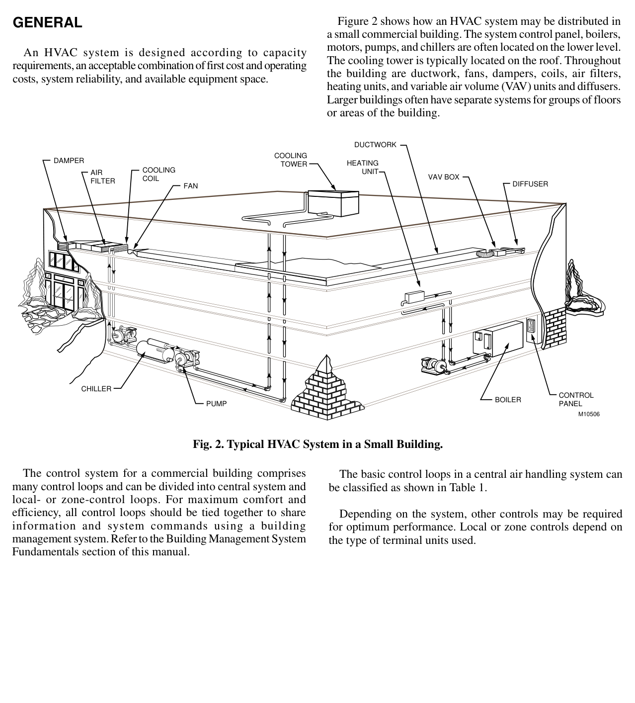
1.1 控制迴路五大要素（工作原理）
一個完整的閉迴路控制包含：受控變數（Controlled Variable，如送風溫度）、感測元件（Sensor）、控制器（Controller，內含設定值 Setpoint 與控制演算法）、最終控制元件（Final Control Element，如閥門／風門）、受控程序（Process，如盤管加熱）。控制器比較「量測值」與「設定值」得到偏差 Deviation，再依演算法輸出操縱變數（Manipulated Variable，如蒸汽流量）。
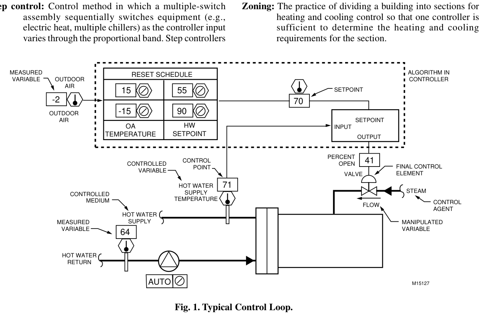
例：送風 13°C"] --> CMP(("比較器
ε = SP − PV")) PV["量測值 PV
感測器回饋"] --> CMP CMP --> CTL["控制器
PID 演算法"] CTL --> FCE["最終控制元件
閥門／風門／VFD"] FCE --> PRC["受控程序
盤管／風機／空間"] PRC -->|"受控變數"| SEN["感測元件"] SEN --> PV D["負載擾動
外氣／人員／IT 負載"] --> PRC
1.2 閉迴路回饋 vs. 開迴路
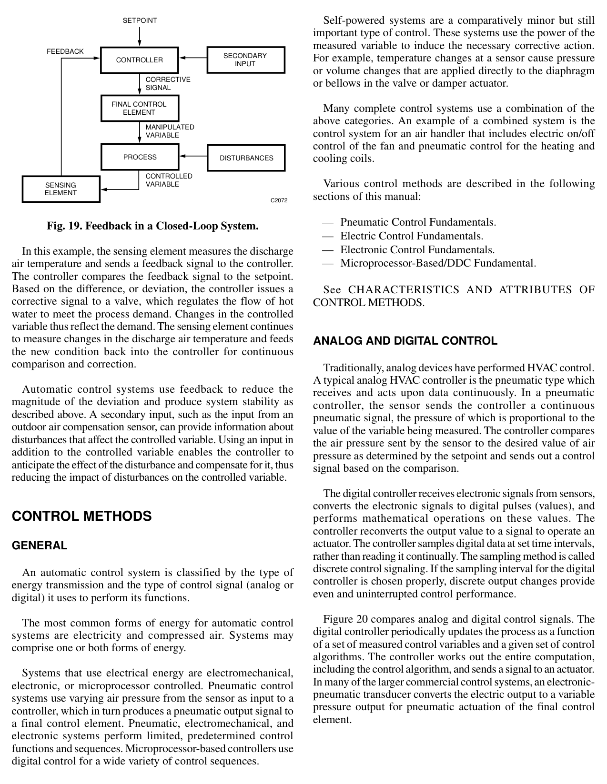
| 項目 | 開迴路 Open Loop | 閉迴路 Closed Loop |
|---|---|---|
| 回饋 | 無（如定時器控制路燈） | 有（感測器持續回授） |
| 抗擾動能力 | 差，負載變化無法補償 | 佳，可自動修正 |
| 穩定性風險 | 無振盪問題 | 參數不當會振盪（Hunting） |
| 典型應用 | 夜間 purge 定時排風 | 送風溫度、冰水溫度、靜壓控制 |
1.3 控制模式總解析（兩位置 → 浮動 → 比例 → PI → PID → EPID）
| 控制模式 | 動作特性 | 優點 | 缺點 | 典型應用 |
|---|---|---|---|---|
| 二位置 Two-Position | 全開／全關，有差動間隙 Differential | 簡單便宜 | 溫度擺動、設備短循環 | 小型熱泵、排風機、家用溫控 |
| 時間比例 Time Proportioning | 固定週期內改變 ON/OFF 時間比 | 平均輸出可調 | 仍為開關動作，接點磨耗 | 電熱器分段 |
| 步進 Step Control | 多段開關依序投入 | 配合多台設備 | 段間仍有落差 | 多台往復式冰機、電熱段 |
| 浮動 Floating | 控制器驅動馬達正/反轉，停在誤差消除處 | 無固定偏移 | 響應慢、需三線式致動器 | 風門、三通閥（Series 60） |
| 比例 P | 輸出與偏差成正比（比例帶 PB） | 快速穩定 | 必有殘差 Offset | 壓力、液位 |
| 比例積分 PI | P 加上積分消除殘差（Reset） | 無穩態誤差 | 積分過強會振盪、Windup | 送風溫度、冰水溫度（HVAC 主力） |
| PID | 再加微分預測變化率（Rate） | 響應快、超調小 | 雜訊放大、調參困難 | 精密空調、實驗室壓力 |
| EPID（Honeywell 強化型） | PID＋啟動輸出值＋誤差爬升時間 | 啟動平順、易調 | 僅特定控制器支援 | Excel 系列 DDC 控制器 |
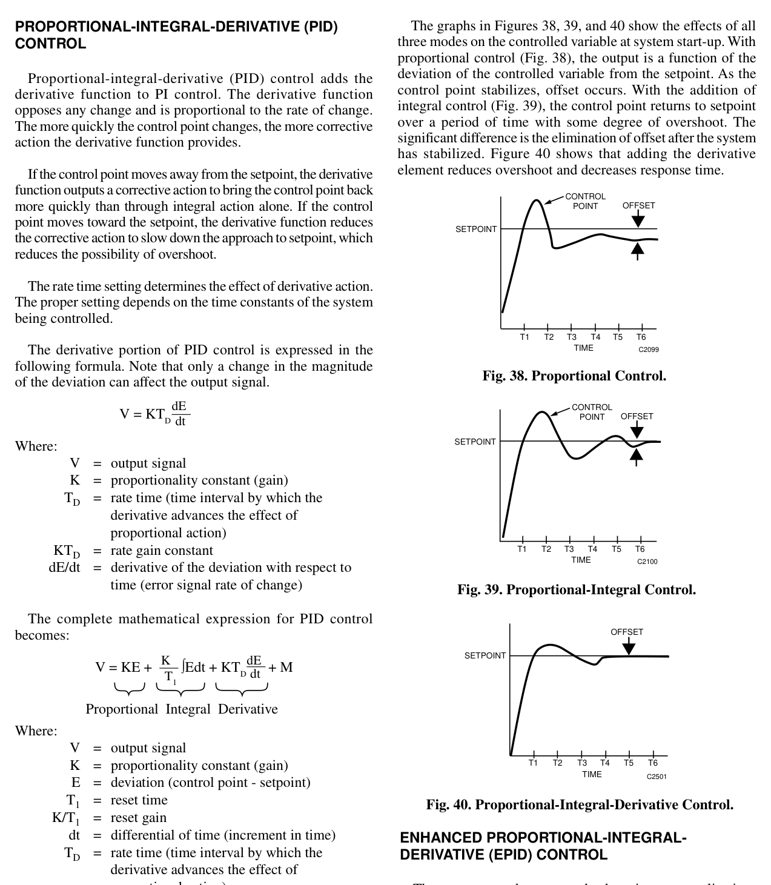
1.4 Reset 補償控制（外氣重置）
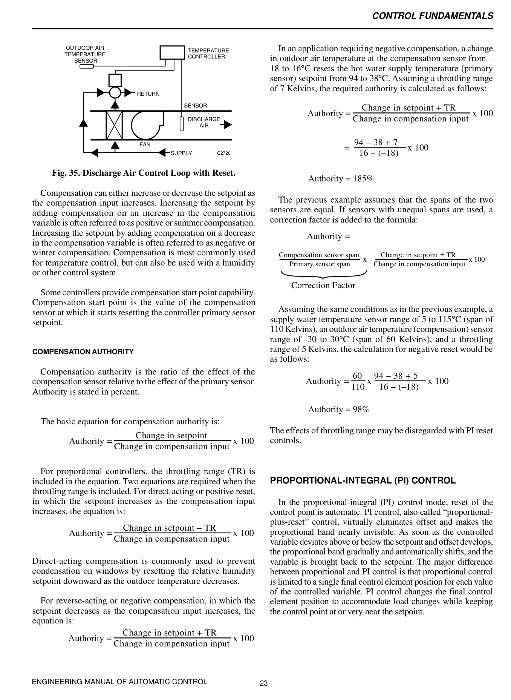
Reset 是 HVAC 節能的第一支柱：熱水供水溫度隨外氣重置、冰水供水溫度隨負載重置、風管靜壓隨 VAV 開度重置。每一條 Reset Schedule 都必須在交付文件中以表格形式寫明（上限/下限/斜率），並在 FPT 時以模擬外氣溫度驗證兩個端點與中間點。
1.5 感測元件與致動器（IO 硬體基礎）
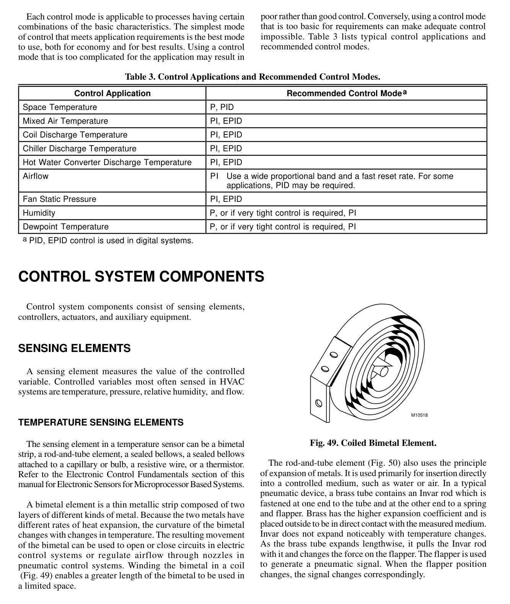
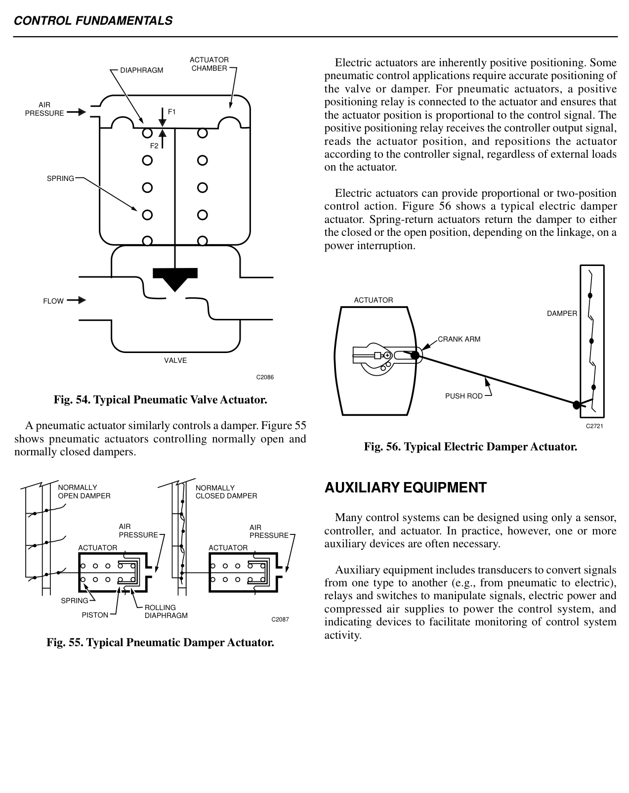
| 感測對象 | 元件原理 | 典型輸出 | 精度（工程實務） |
|---|---|---|---|
| 溫度 | 雙金屬／液漲式／RTD(Pt1000)／NTC／熱電偶 | 機械位移／Ω／mV／4–20 mA | RTD ±0.1~0.3°C；NTC ±0.2°C；溫控器 ±1°C |
| 濕度 | 尼龍薄膜／電容式高分子 | 位移／0–10 V／4–20 mA | ±2~3%RH（年度漂移需校驗） |
| 壓力 | 波登管／電容式／壓阻式 | 位移／4–20 mA | ±0.5% FS（風管靜壓用 ±1% 低量程型） |
| 流量 | 皮托管／平均風速管／超音波／電磁 | 差壓／脈波／4–20 mA | 差壓式 ±2~5%（安裝直管段決定成敗） |
| 運轉證明 | 電流感知器 CT／風壓開關／槳葉流量開關 | 乾接點 DI | —（狀態而非量測） |
1.6 程序動態：熱容量、死區時間與偏移
原書 pp.27–29 指出控制品質的三大敵人：供應側容量（Supply Capacitance，盤管水容量）、需求側容量（Demand Capacitance，空間熱質量）、死區時間（Dead Time，感測器位置與流動延遲）。算力中心通道內風速 5–8 m/s，溫度感測器若裝在 CRAH 出風口 1 m 內，死區時間僅 0.2 s，可用較快 PI；辦公大樓大空間熱質量大（時間常數 20–40 min），積分時間必須拉長，否則產生日夜溫度循環擺盪。
1.7 測試方法與驗證重點（本章對應）
- 開迴路階梯測試：手動將閥門由 0%→50%→100%，記錄受控變數響應曲線，求程序增益 Kp 與時間常數 τ，作為 PID 起始參數。
- 閉迴路設定值擾動測試：改變設定值 ±2°C，觀察收斂時間與超調量；驗收標準建議：15 min 內進入 ±0.5°C 且超調 < 1.5°C。
- Reset Schedule 三點驗證：模擬外氣低點/中點/高點，核對被重置之設定值。
- 感測器比對：以手持式標準器（精度至少高被測物 3 倍）在運轉點比對，溫度誤差 > 0.5°C 即校正或更換。
- 致動器行程與失效位置：0–100% 行程線性度、斷電/斷訊號復位方向（Fail-Open/Fail-Close）與圖說一致性。
模組 2｜濕空氣與焓濕圖 Psychrometric Fundamentals
對應原書 pp.47–65。焓濕圖是空調控制的「地圖」——所有 AHU 控制程序（混合、加熱、冷卻、加濕、除濕、節能器）都能畫在圖上驗算。試運轉時，焓濕圖是把「量測數據」轉成「性能結論」的工具。
2.1 焓濕圖七大狀態量
乾球溫度 DB、濕球溫度 WB、露點溫度 DP、相對濕度 RH、絕對濕度 W（kg/kg 乾空氣）、比焓 h（kJ/kg）、比容 v（m³/kg）。任兩個獨立量可決定狀態點，其餘由圖讀出。
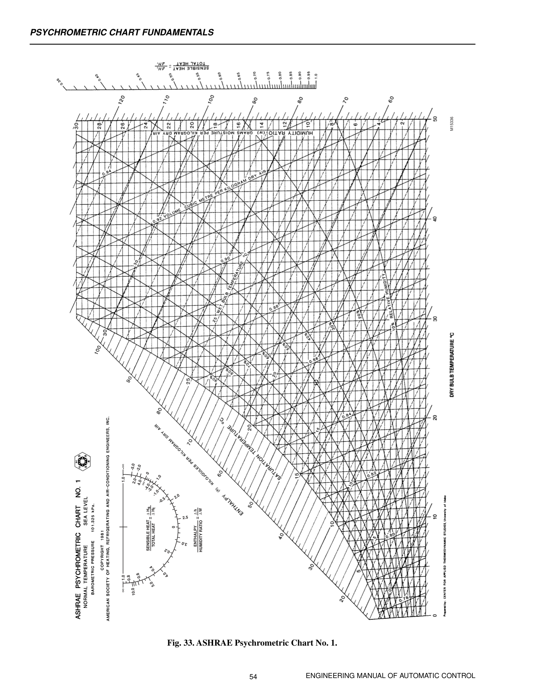
2.2 八大空調過程在圖上的路徑
| 過程 | 圖上路徑 | 設備 | 控制手段 |
|---|---|---|---|
| 顯熱加熱 | 水平向右（W 不變） | 熱水/蒸汽盤管 | 閥門比例控制 |
| 顯熱冷卻 | 水平向左（未達飽和） | 冰水盤管（乾盤管） | 閥門比例控制 |
| 冷卻除濕 | 向左下（沿飽和線折彎） | 冷盤管（露點以下） | 閥門＋旁通 |
| 加濕（蒸汽） | 近乎垂直向上（等溫） | 蒸汽加濕器 | 比例閥 |
| 加濕（水霧/水洗） | 沿等濕球線左上（絕熱） | 噴霧/水洗室 | 泵浦啟停/比例 |
| 混合 | 兩狀態點連線上，依質量比分割 | 混風風門 | 風門比例 |
| 風機溫升 | 微幅右上（ΔT≈0.5–1.5°C） | 風機 | —（計算時不可漏） |
| 化學除濕 | 向右下（等焓偏下） | 吸附轉輪 | 轉輪啟停/旁通 |
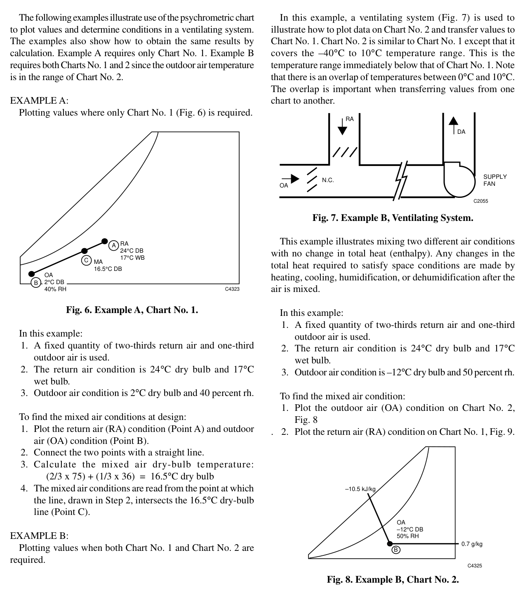
2.3 工程應用：為何算力中心顧問必懂焓濕圖
- 節能器決策：乾球節能器比較 OA 與 RA 溫度；焓值節能器（Enthalpy Economizer）比較比焓 h。當 OA 焓值 < RA 焓值，引入 100% 外氣免費冷卻。算力中心 24×7 運轉，焓值節能器在過渡季可讓冰水主機停機，直接反映在 PUE。
- 加濕/除濕能耗：資料中心維持 40–60%RH（ASHRAE TC9.9 建議露點 5.5–15°C）。冬季外氣 −5°C/80%RH 僅含 2 g/kg 水分，加熱到 24°C 後 RH 只剩 10%——必須加濕；加濕量與電費都由焓濕圖算出。
- 結露風險：冷通道地板下送風若低於室內露點即結露。試運轉時以焓濕圖核算：室內 24°C/50%RH → 露點 13°C，故送風不得低於 14°C（留 1°C 餘裕）。
2.4 測試與驗證重點
- 以經校驗之乾濕球計或數位焓濕計量測 AHU 進/出風狀態，描點於焓濕圖，驗證盤管處理線斜率與設計相符。
- 混風點驗證：量測 OA/RA/MA 三點溫度，代入混合公式反算實際外氣比，與風門開度回授交叉核對（誤差 >10% 表示風門特性或洩漏異常）。
- 盤管出風露點（Apparatus Dew Point）推估：除濕工況下出風點應落在飽和線 90–95% 繞流因數線上；偏離過大表示盤管髒堵或水量不足。
- 焓值節能器切換點驗證：模擬 OA 焓值跨越設定值（如 47 kJ/kg），確認風門與冰水閥聯動切換無振盪、無死區。
模組 3｜控制技術世代：氣動 → 電動 → 電子控制
對應原書氣動 pp.66–106、電動 pp.107–130、電子 pp.119–130。理解舊技術不是考古——台灣與全球大量既有建築仍在運轉氣動系統，改裝 DDC 時必須保留或介接這些硬體；而電動迴路（Series 40/60/90）至今仍是小型設備與連鎖迴路的骨幹。
3.1 氣動控制 Pneumatic Control
工作原理
氣動系統以 140 kPa（20 psi）潔淨乾燥壓縮空氣為能源，控制訊號為 21–103 kPa（3–15 psi）。核心放大元件是噴嘴-擋板（Nozzle-Flapper）：擋板與噴嘴間隙微小變化 → 背壓大幅變化 → 經中繼閥（Relay）放大氣量驅動膜片致動器。感測元件（雙金屬、液漲球）直接推動擋板，形成「無電子」的比例控制器。
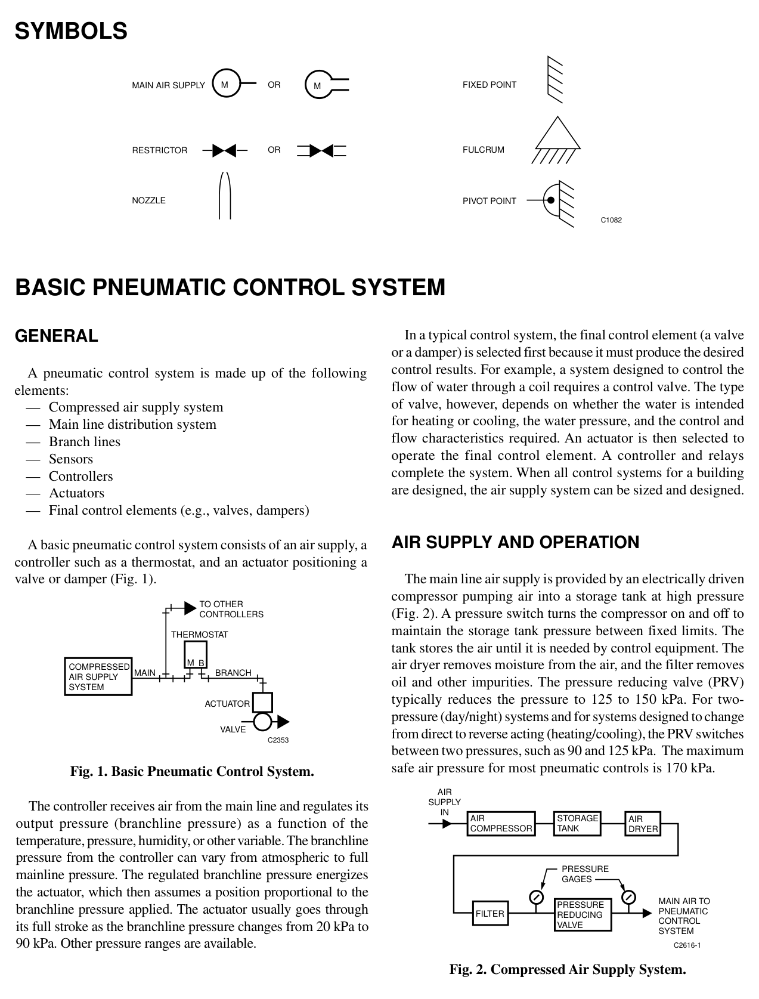
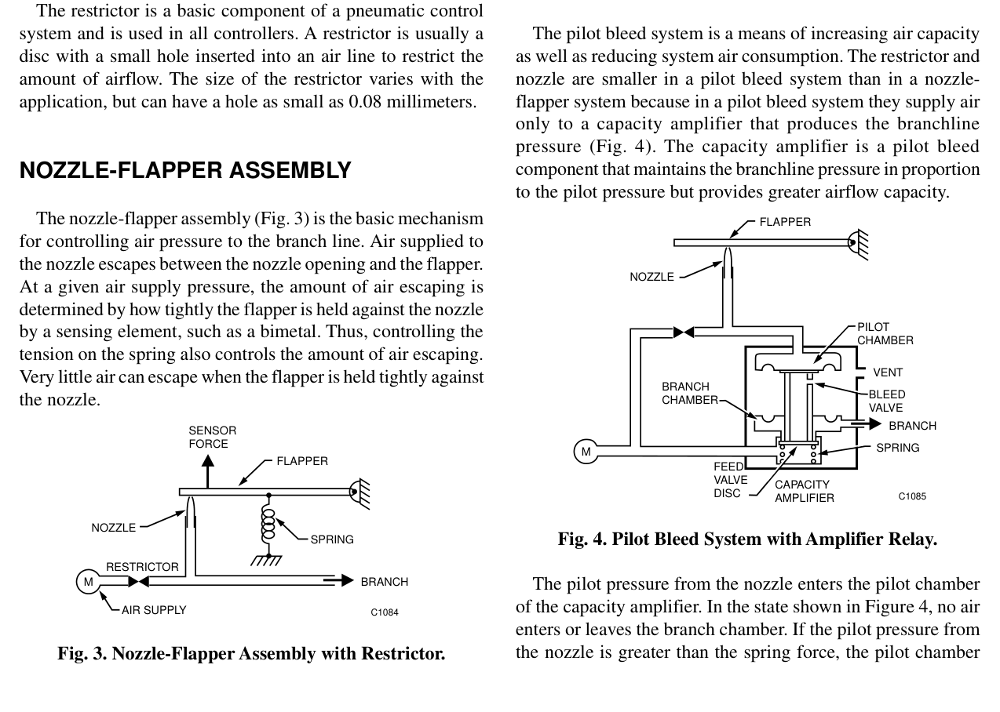
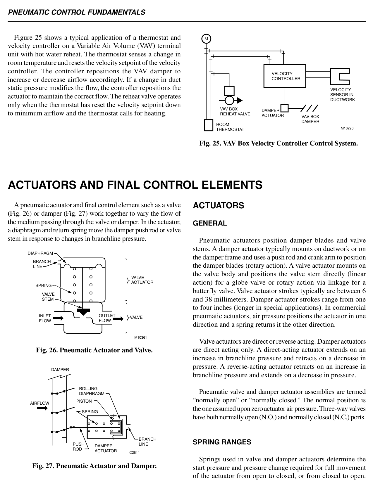
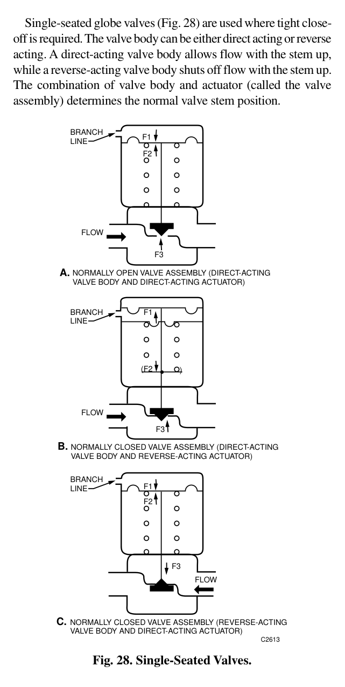
氣動中繼元件（Relay）功能速查
| Relay 類型 | 功能 | 典型應用 |
|---|---|---|
| 切換 Switching | 訊號達設定值切換氣路 | 日/夜模式切換 |
| 快動 Snap-acting | 無延遲硬切換 | 安全連鎖 |
| 鎖定 Lockout | 保持狀態直到復歸 | 節能器高溫鎖定 |
| 平均 Averaging | 多訊號取平均 | 多區溫度平均控制 |
| 比率 Ratio | 輸出=輸入×比率 | 雙風門順序比例 |
| 反轉 Reversing | 輸出隨輸入遞減 | 夏/冬模式轉換 |
| 定位 Positive-positioning | 閥位回饋閉迴路 | 高壓差閥精確定位 |
| E/P、P/E | 電-氣／氣-電轉換 | DDC 改裝保留氣動閥的介面 |
3.2 電動控制 Electric Control（Series 40/60/80/90）
工作原理與迴路解析
| 系列 | 控制模式 | 迴路特徵 | 應用 |
|---|---|---|---|
| Series 40 | 二位置 | SPST 線電壓直接切換 | 小型風機、電熱、電磁閥 |
| Series 80 | 二位置（低電壓） | 24 V 控制線電壓負載 | 屋頂機、單元加熱器 |
| Series 60 | 浮動 | SPDT 控制器驅動可逆馬達正反轉 | 風門、三通閥 |
| Series 90 | 比例 | 惠斯登電橋：135 Ω 滑線電阻平衡驅動 | 比例閥、比例風門 |
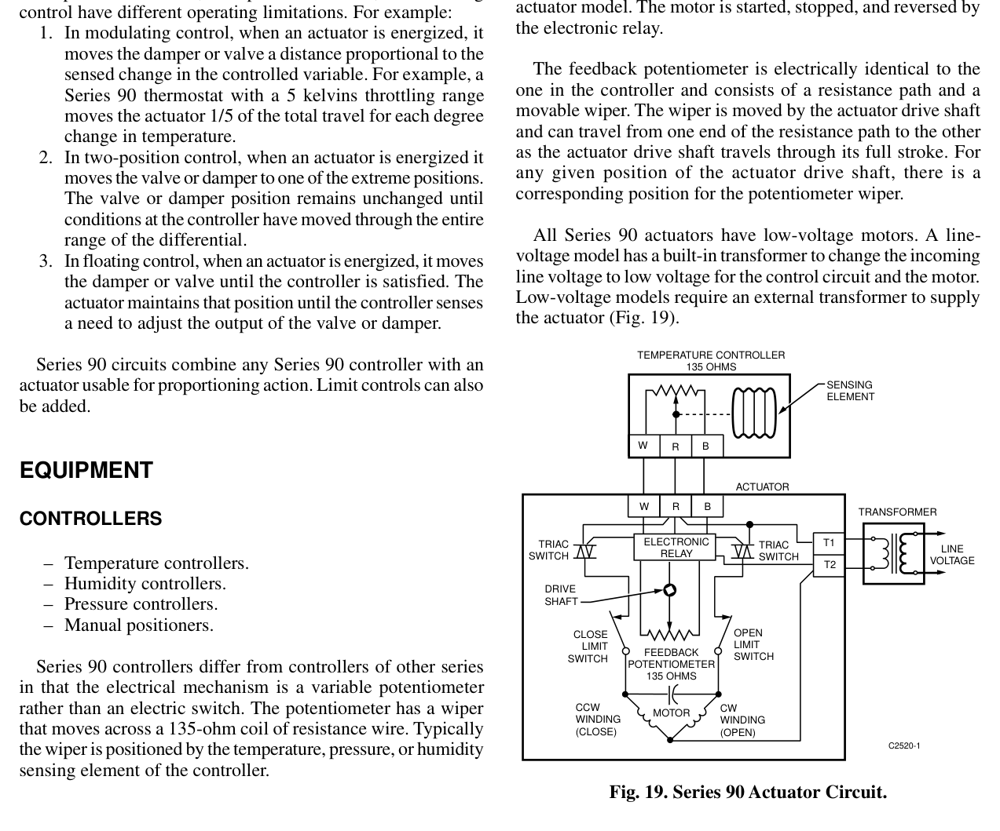
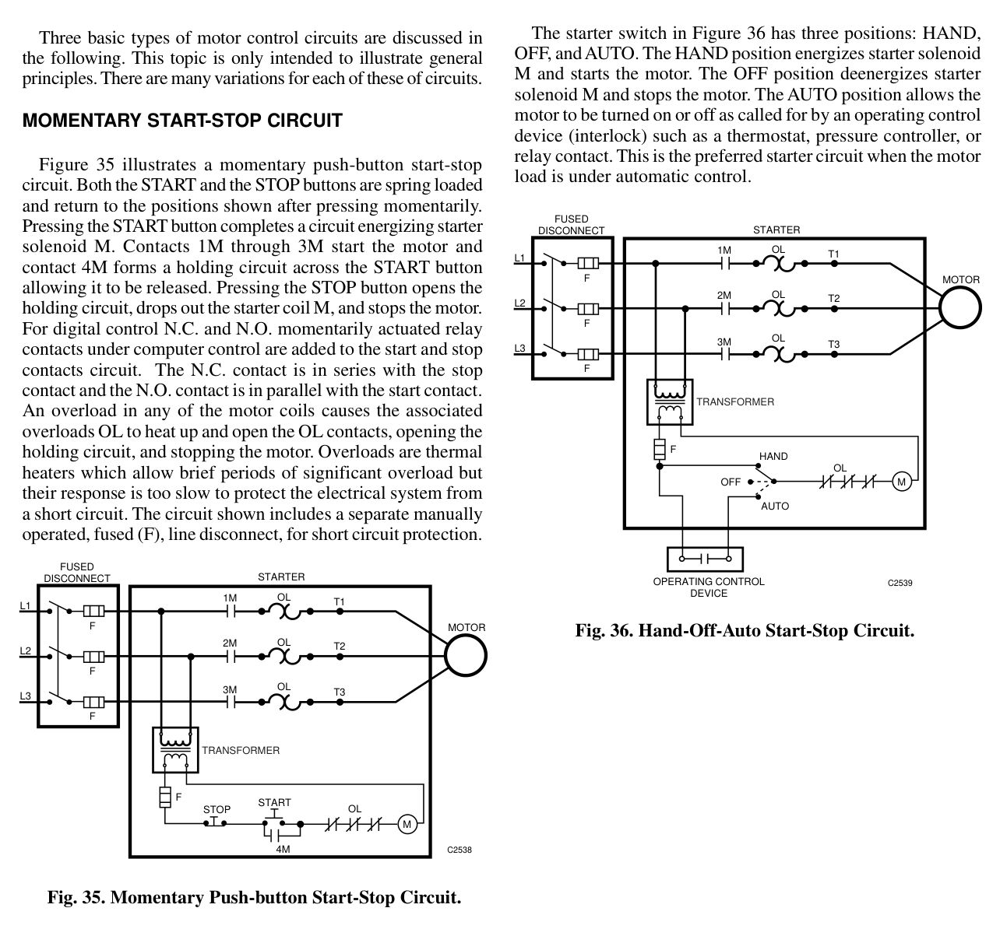
3.3 電子控制 Electronic Control
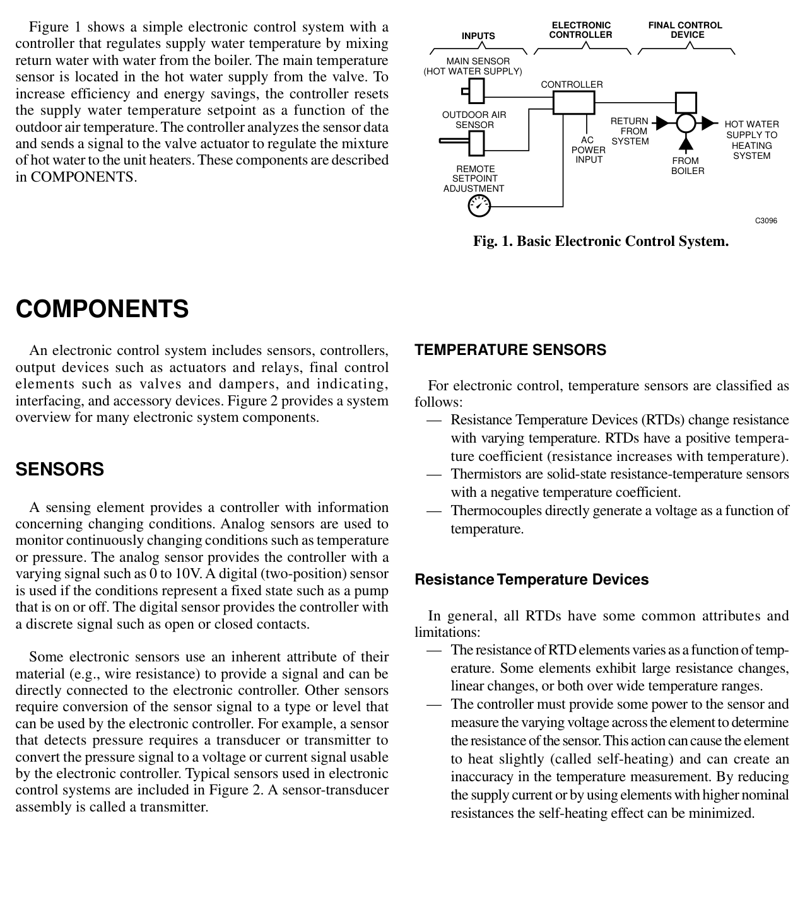
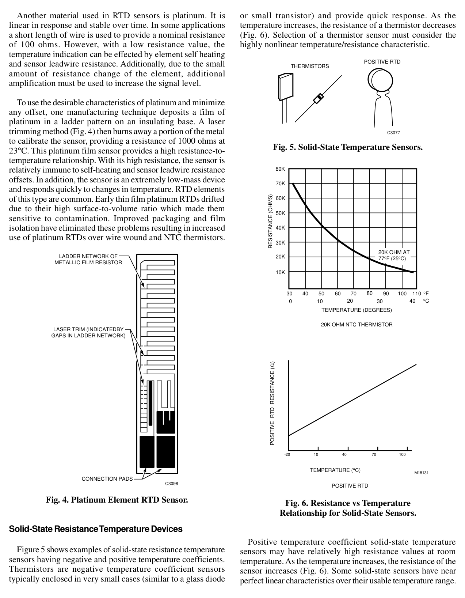
電子感測器選型對照（IO 硬體核心）
| 元件 | 原理 | 精度 | 適用 | 注意事項 |
|---|---|---|---|---|
| Pt100/Pt1000 RTD | 金屬電阻隨溫度線性變化 | ±0.1–0.3°C | 冰水/熱水溫度、精控場所 | 需三線式補償線阻；Pt1000 抗線阻較佳 |
| NTC 熱敏電阻 | 半導體電阻負溫度係數 | ±0.2°C（窄範圍） | 室溫、風管溫度 | 非線性，需控制器查表 |
| 熱電偶 | 異金屬接點熱電勢 | ±0.5–1°C | 高溫（鍋爐煙道） | 需冷接點補償 |
| 固態 IC 感測器 | PN 接面壓降 | ±0.5°C | 小型 DDC 感測器 | 範圍窄（−40~120°C） |
| 電容式濕度 | 高分子薄膜介電係數隨 RH 變化 | ±2%RH | 室內、風管 | 年漂移 1–2%，須校驗 |
| 電容/壓阻壓力 | 膜片位移改變電容/電阻 | ±0.5%FS | 風管靜壓、水壓差 | 量程選實際值 1.5–2 倍 |
3.4 測試與驗證重點（本章對應）
- 氣動：主氣源壓力、露點（<−18°C 壓力露點）、各支管減壓閥設定、E/P 轉換器 21–103 kPa 線性度（5 點校驗）。
- 電動：Series 60 浮動馬達全程行程時間量測（常見 90–150 s）；Series 90 電橋平衡測試——手動偏移感測滑線，致動器應平滑跟隨無抖動。
- 電子：RTD 以精密電阻箱或乾井爐三點校驗（0/50/100°C）；4–20 mA 迴路以過程校驗儀注入模擬訊號驗證 DDC 顯示值。
- 安全連鎖：逐項「拔訊號」測試——拔凍結保護接點，風機必須停、新風門關、熱水閥全開，且與 DDC 電源狀態無關。
模組 4｜DDC 微電腦控制 Microprocessor-Based/DDC Fundamentals
對應原書 pp.131–148。DDC（Direct Digital Control）是現代樓宇自控的核心：微處理器直接讀取感測器、執行控制程式、輸出驅動設備。原書 1997 年版描述的架構至今仍是主流，僅通訊協定進化為 BACnet/IP、Modbus TCP。
4.1 DDC 架構與控制器類型
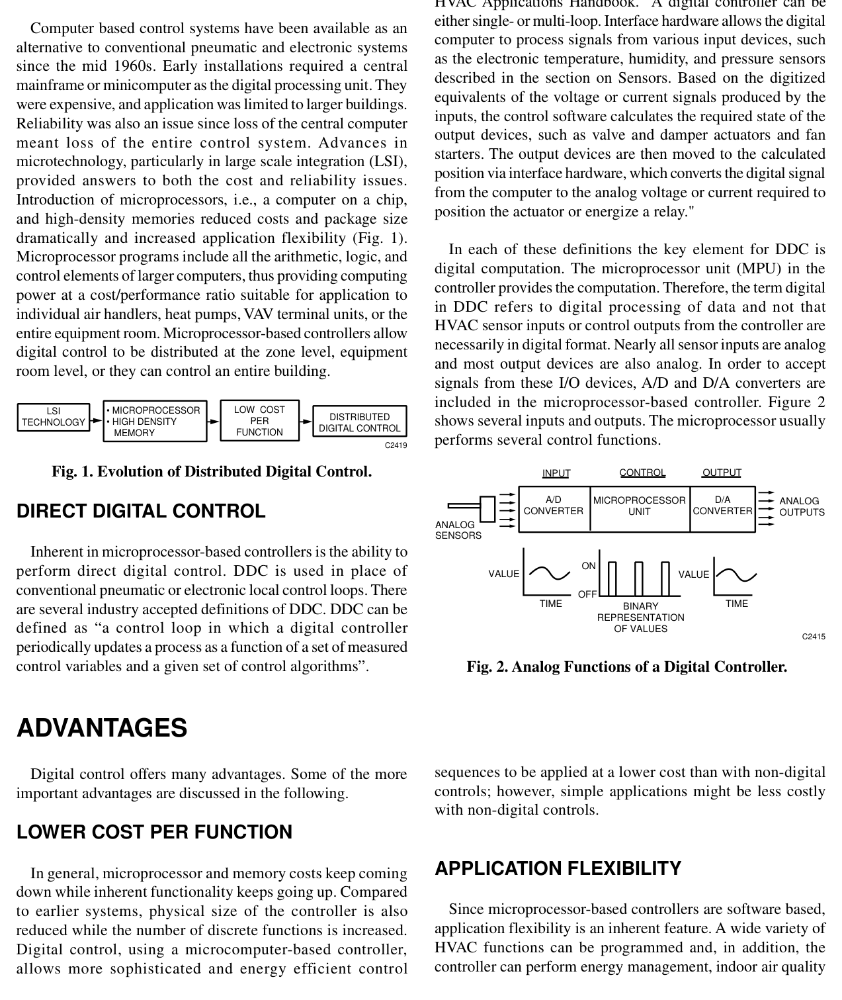
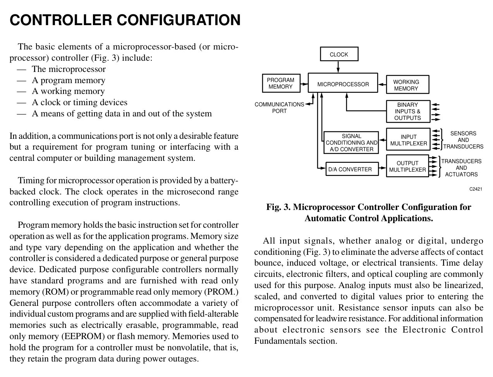
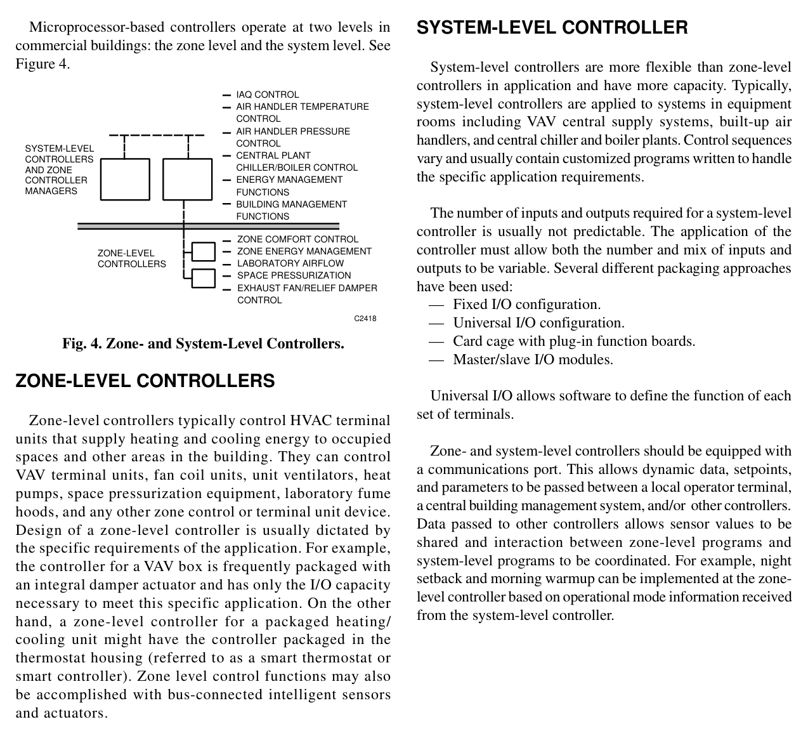
DDC 相對氣動/類比的優勢（原書 pp.134 整理＋實務註解）
| 優勢 | 說明 | 算力中心視角 |
|---|---|---|
| 精確與可重複 | 數位計算無漂移，Reset Schedule 精準執行 | 冷通道溫度 ±0.5°C 達成 |
| 複雜順序容易實現 | 節能器、台數控制、最佳啟停用軟體完成 | 多組 CRAH 輪值與 N+1 自動切換 |
| 自適應參數 | 可依季節/負載切換 PID 參數組 | IT 負載 30%→90% 全範圍穩定 |
| 資料記錄 | 趨勢、警報、運轉時數自動累計 | PUE 計算與 SLA 佐證資料 |
| 遠端監控 | 經 BMS 集中監看 | DCIM 整合（Modbus/BACnet/SNMP） |
4.2 控制器軟體與程式開發
原書將控制器軟體分為：作業系統層（掃描 I/O、通訊、時序）與應用程式層（控制邏輯）。程式開發手段：參數設定型（固定程式填參數）、圖形化功能方塊（FBD）、行式語言（Line Programming）。
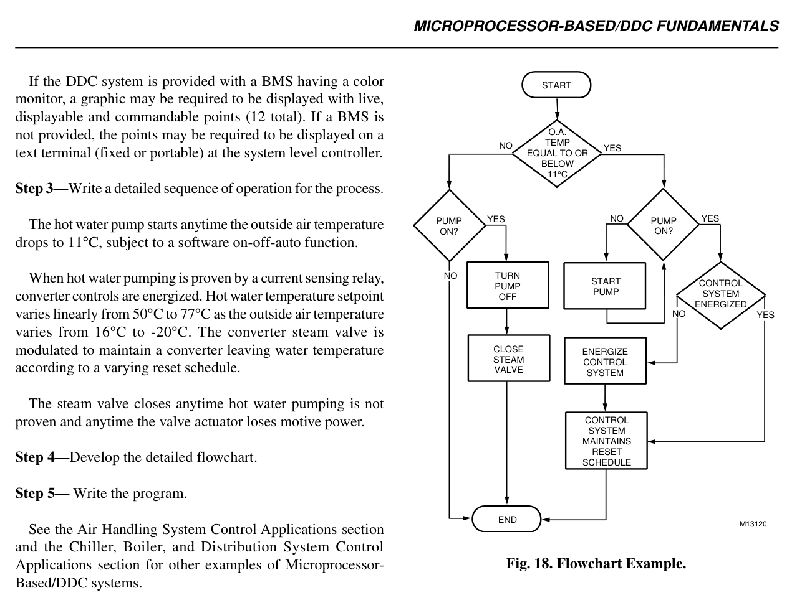
4.3 能源管理功能（原書經典演算法）
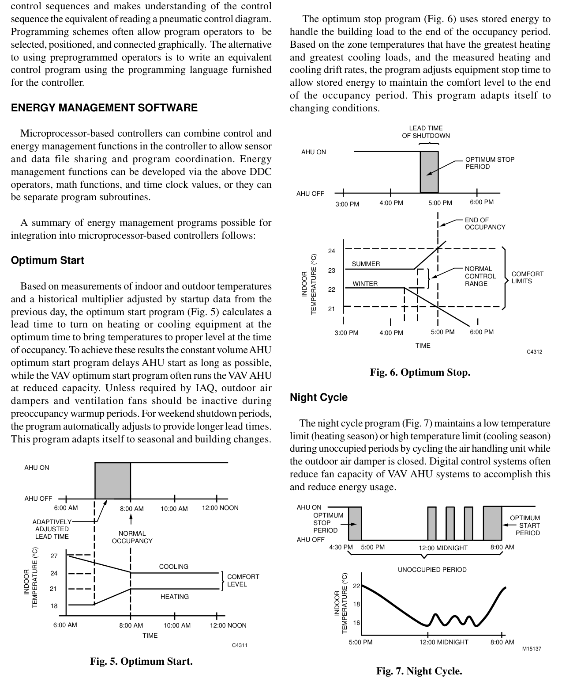
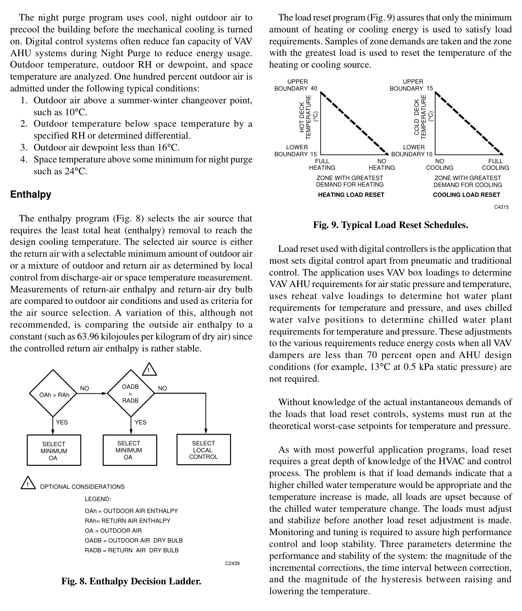
| 功能 | 原理 | 節能潛力 | 驗證方法 |
|---|---|---|---|
| 最佳啟停 Optimum Start/Stop | 學習建築熱惰性，最遲啟動/最早停機 | 5–15% | 連續 5 日趨勢：佔用時刻 ±10 min 達標 |
| 夜間循環 Night Cycle | 夜間溫度漂移超限才短時運轉 | 3–8% | 冬季夜間趨勢驗證啟停次數 |
| 焓值/乾球節能器 | OA 條件佳時以風代冰 | 10–30%（氣候相關） | 模擬 OA 條件跨越切換點 |
| 需量限制 Demand Limiting | 預測 15 min 需量超限即卸載 | 契約容量罰款歸零 | 模擬需量訊號驗證卸載順序 |
| 零能區 Zero Energy Band | 冷熱都不需的死區內全部關閉 | 消除冷熱互搏 | 死區內趨勢：冷熱閥皆 0% |
| 負載重置 Load Reset | 以最不利迴路需求重置供水/風壓設定 | 10–25% 輸送能耗 | 詳 M8/M9 Trim & Respond |
4.4 測試與驗證重點
- 程式離線模擬：以模擬器注入極端輸入（感測器斷線=−40°C、超量程），程式必須進入預定安全態並發警報。
- 掃描週期驗證：安全相關迴路掃描 ≤1 s，溫度迴路 ≤5 s；以趨勢時間戳檢查。
- 斷電回復測試：控制器斷電 5 min 復電後，參數不丟失、設備按預定順序重啟（尤是算力中心 CRAH 不得同時全啟動造成湧浪）。
- 通訊失效降級：拔掉網路線，現場控制器必須自主維持最後安全控制策略（Standalone Capability）——這是 DDC 與純雲端控制的本質區別。
模組 5｜BMS 建築管理系統與 IO 硬體點表
對應原書 pp.183–198。BMS 是所有控制迴路的「大腦中樞」：集中監控、圖控顯示、警報管理、趨勢記錄、能源分析。本章同時建立 IO 硬體完整知識——點表是自控工程最重要的單一文件。
5.1 BMS 階層架構
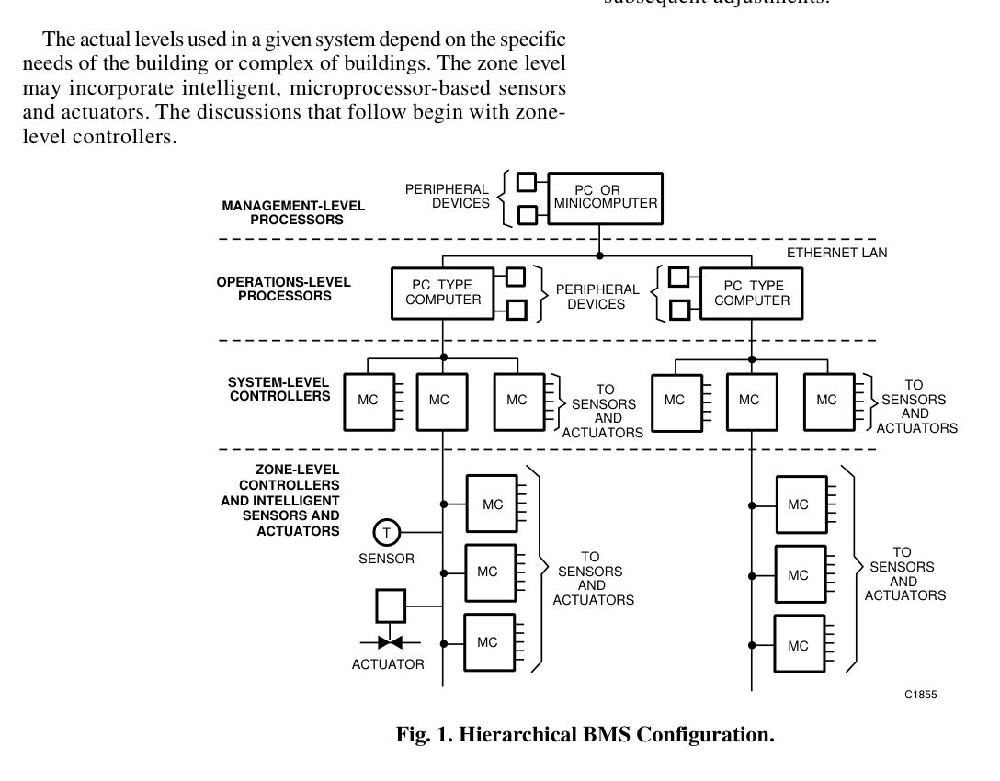
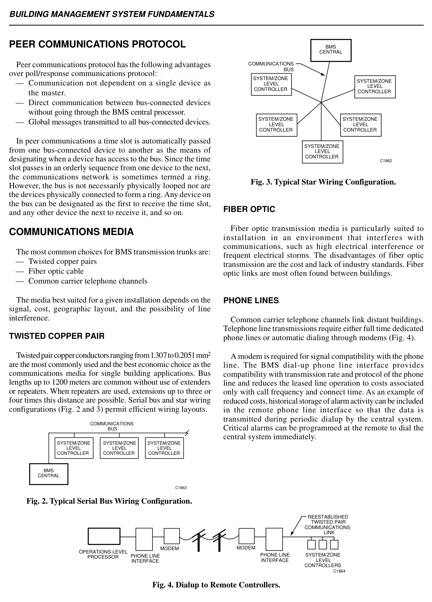
5.2 IO 硬體四大類型完整解析
| 類型 | 訊號形式 | 典型設備 | 接線/調試要點 |
|---|---|---|---|
| AI 類比輸入 | 4–20 mA、0–10 V、Pt1000、NTC 10 kΩ | 溫度/濕度/壓力/流量/CO₂ 傳送器 | 電流訊號抗干擾優於電壓；遮罩線單端接地；兩線式傳送器注意迴路供電 |
| AO 類比輸出 | 4–20 mA、0–10 V | 比例閥致動器、VFD 速度命令、E/P | 負載阻抗匹配（電流輸出 ≥750 Ω 驅動力）；與 VFD 隔離干擾 |
| DI 數位輸入 | 乾接點、24 VAC/VDC 濕接點 | 運轉/故障狀態、壓差開關、凍結保護、水流開關 | 明確定義 NO/NC 與「正常態」；安全迴路用 NC（斷線即警報） |
| DO 數位輸出 | Relay 接點、Triac 24 VAC | 風機/泵浦啟停、電磁閥、風門開關 | Relay 接點容量 vs. 負載（馬達需經 MCC 輔助接點）；Triac 僅適合小負載 |
| 脈波輸入 | 乾接點/光隔離脈波 | 電錶、水錶、熱量錶 | 脈波常數 kWh/pulse 寫入點表；累計值斷電保存 |
| 通訊點 | BACnet、Modbus、SNMP、OPC | 冰水主機、VFD、UPS、發電機、精密空調 | 點位對照表（Point Mapping）須逐點驗證 R/W 屬性 |
5.3 點表（I/O Summary / Points List）編製——原書經典範例
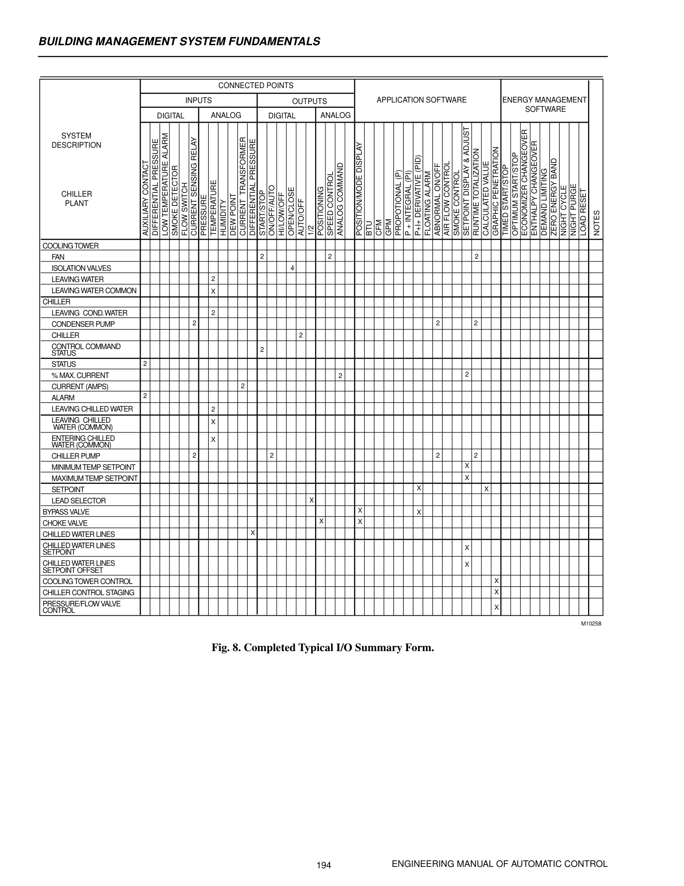
5.4 圖控設計與系統功能
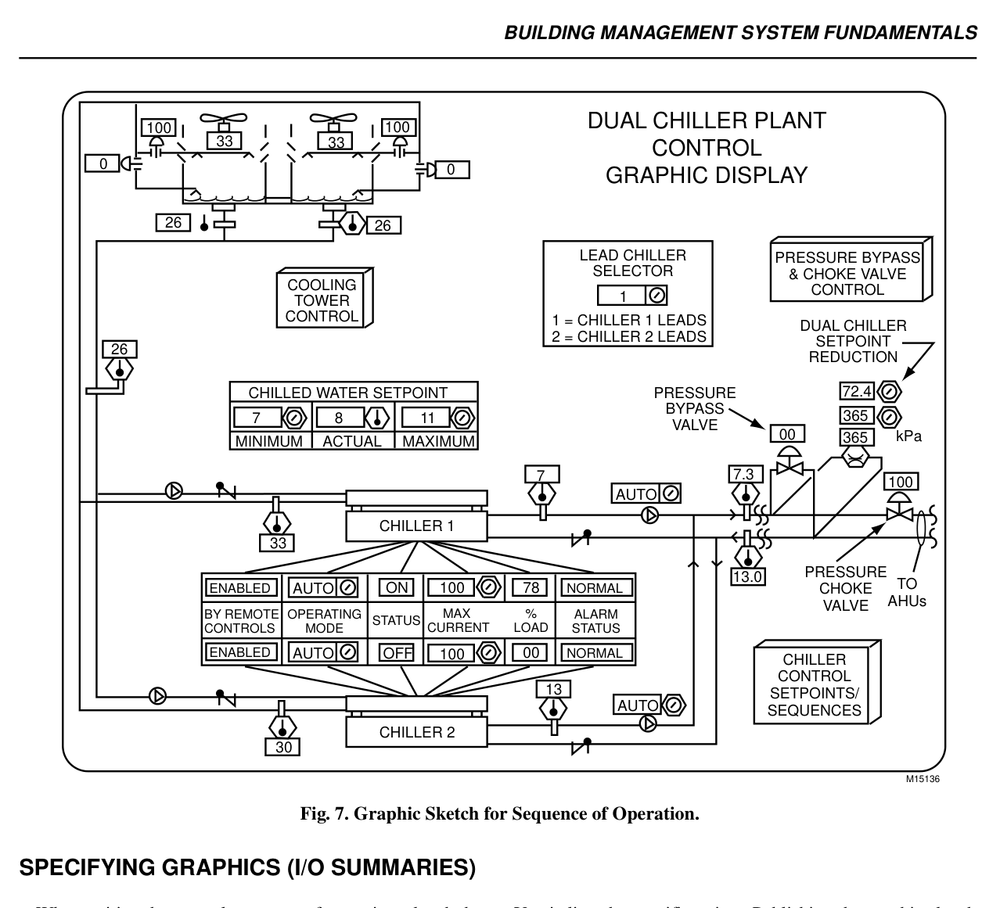
BMS 系統功能（原書 pp.189–196）
- 監控與警報：分級（緊急/重要/提示）、延遲、連動推播
- 趨勢記錄 Trend Log：試運轉與能耗分析的生命線
- 排程：日/週/年/例外日曆
- 圖形滲透 Graphic Penetration：由全區→樓層→設備逐層鑽取
- 能源管理：需量、累計、成本分攤
- 系統整合：消防、門禁、CCTV、照明（原書 pp.196 之 Integration）
5.5 測試與驗證重點
- 點對點測試（P2P）：依點表逐點執行——DI 短接/開路、AI 注入 4/12/20 mA 三點、AO 命令 0/50/100%、DO 強制 ON/OFF，回控端顯示與現場動作雙向確認，100% 覆蓋、簽認存證。
- 通訊點：逐點比對數值與設備本體顯示（如主機面板 vs. BMS 畫面），驗證寫入權限分級。
- 警報路由：觸發各級警報，驗證值班室、Email、簡訊/LINE 推播到達時間 < 60 s。
- 趨勢記錄：抽驗 10% 關鍵點 72 hr 連續記錄無斷點（Gap）。
模組 6｜IAQ 室內空氣品質與煙控管理
對應原書 IAQ pp.149–170、煙控 pp.171–182。IAQ 關乎健康與法規（台灣 IAQ 管理法），煙控關乎生命安全且是唯一需要法定驗收測試的樓宇控制子系統。
6.1 IAQ 關切項目與控制對策
| 污染物 | 來源 | 控制對策 | 監測點 |
|---|---|---|---|
| CO₂ | 人員呼吸 | 需求控制通風 DCV：CO₂ > 800–1000 ppm 增加外氣 | 回風管/人員密集區 |
| 微粒 PM | 室外、內部產生 | 過濾等級提升（MERV 13+／HEPA） | PM2.5 感測器 |
| VOC/甲醛 | 建材、家具 | 新裝修排氣、材料管制 | TVOC 感測器 |
| CO | 停車場、燃燒 | 停車場 CO 連動排風 | B1/B2 各防火分區 |
| 濕度/微生物 | 凝結、積水 | RH < 60%、盤管排水坡度、UVGI | RH 感測器 |
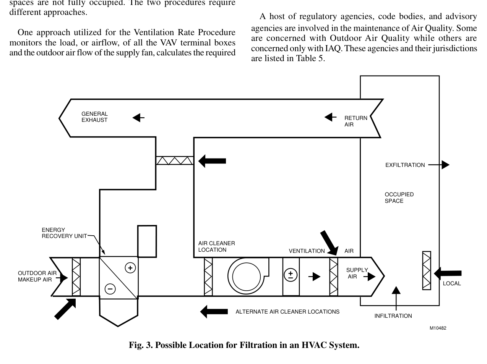
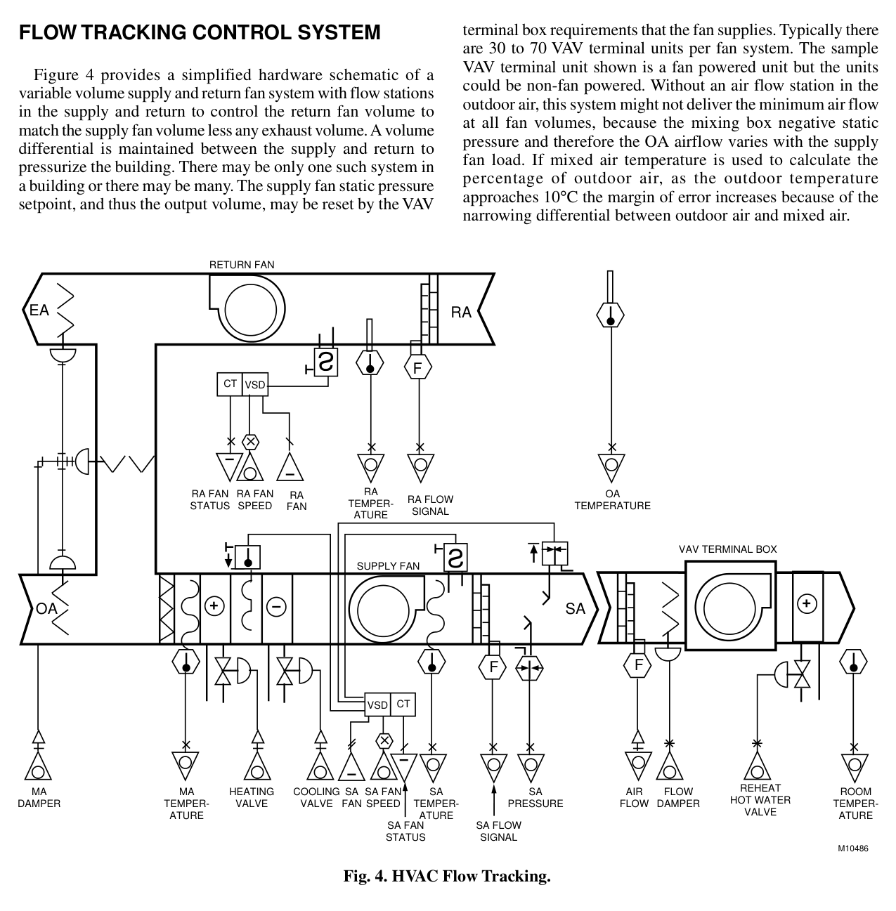
6.2 煙控管理 Smoke Management
設計原理
煙的移動受四大力驅動：煙囪效應（Stack Effect）、浮力、膨脹、風壓與 HVAC。控制手段為「壓差屏障」：使火災區相對鄰區維持負壓（排煙），逃生路徑（樓梯間、電梯前室）維持正壓（加壓），壓差目標 12.5–50 Pa（門開啟力 ≤133 N 為上限依據，NFPA 92）。
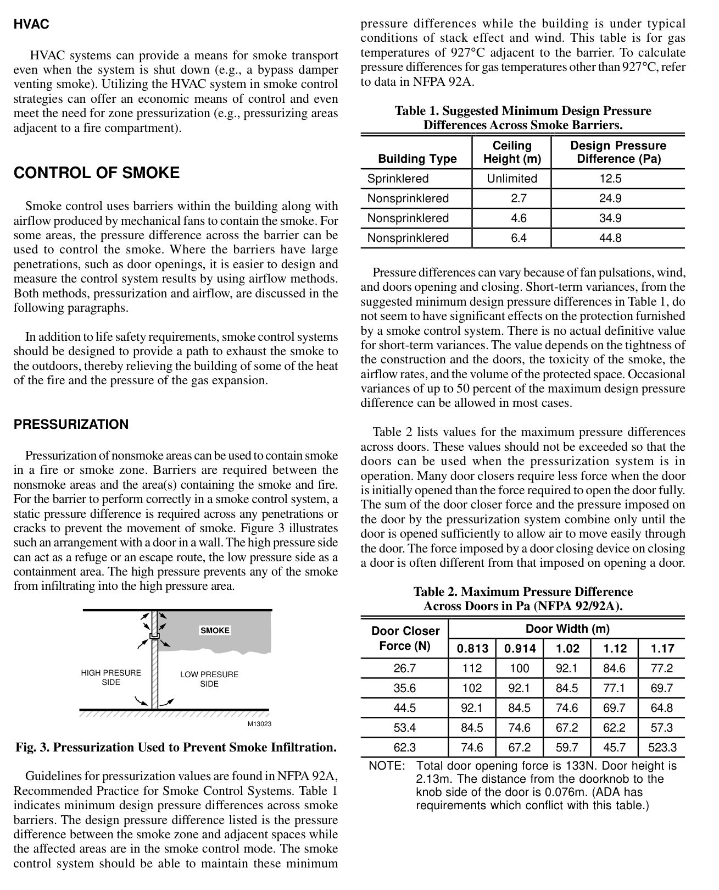
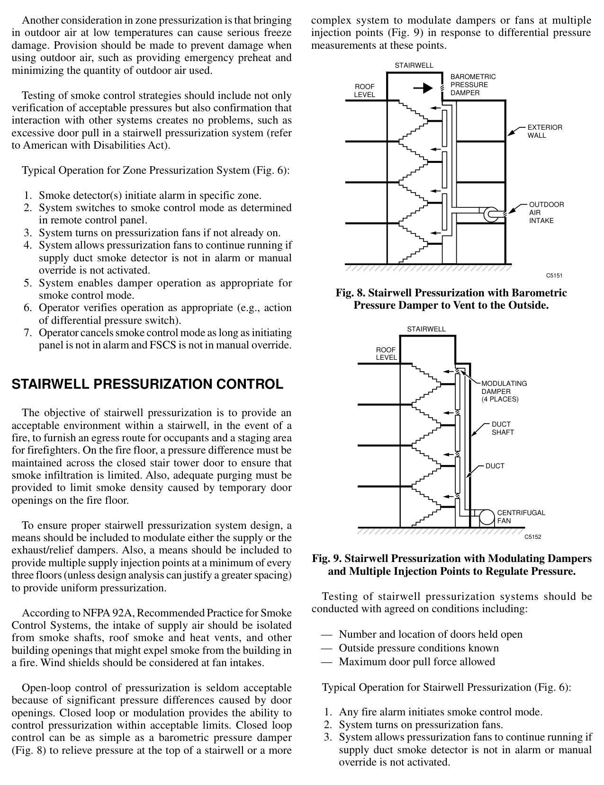
煙控系統法定要求（原書 p.179 對照）
- 符合 UL 864（控制設備列名）與 NFPA 92A（煙控系統）：專用煙控盤（UUKL 列名）、監督式接線、與火警系統優先權界面。
- Acceptance Testing 驗收測試（原書 p.181）：每一煙控情境逐一啟動，量測壓差與氣流方向，記錄存證；台灣對應消防法規之排煙設備檢測與消防署查驗。
- 低洩漏風門（Leakage Rated Dampers，UL 555S Class I/II）：煙控風門洩漏等級是規格與驗收重點。
6.3 測試與驗證重點
- IAQ：CO₂ 感測器以標準氣體（0/800/1500 ppm）校驗；DCV 測試——於室內釋放 CO₂ 或模擬訊號，驗證外氣風門依設定曲線開啟。
- 正壓驗證：門窗全關下以微壓計量測各區相對壓差，辦公大樓目標 +5~+15 Pa（對外）。
- 煙控情境測試：依核准之煙控矩陣（Smoke Control Matrix）逐區觸發，確認風機啟停、風門位置、壓差（12.5–50 Pa）、門開啟力、氣流方向（煙霧棒）五項全數合格並錄影存證。
- 優先權測試：火警訊號進入時，BMS 手動/自動命令必須失效（消防優先）；火警復歸後系統不得自動重啟（須人工復歸）。
模組 7｜空調箱 AHU 控制應用（全書最精華章）
對應原書 pp.201–262。原書以「功能描述 Functional Description＋控制程序圖（含項次編號）＋Features＋Conditions for Successful Operation＋Specifications＋Psychrometric Aspects」六段式撰寫每個控制程序——這正是交付文件 SOO 的最佳範本，本教案 M13 直接沿用。
7.1 有效控制的先決條件（原書 p.204）
- 設備容量與負載匹配（閥門/風門正確選型，詳 M11）
- 感測器裝在「有代表性」的位置（混風均勻處、盤管下游充分混合段）
- 控制迴路整定正確（M1 之 PID）
- 安全連鎖獨立於控制迴路
7.2 AHU 控制程序總覽流程
Fan Start-Stop"] --> B["混風控制
Mixed Air Control"] B --> C{"外氣條件適合免費冷卻?"} C -->|是| D["節能器模式 Economizer
100% OA"] C -->|否| E["最小外氣模式
Min OA"] D --> F["預熱 Preheat
冬季防凍"] E --> F F --> G["加濕 Humidification"] G --> H["冷卻/除濕 Cooling & Dehumid."] H --> I["送風溫度/靜壓控制
SA Temp & Static"] I --> J["末端 VAV Box"] S["安全連鎖：煙感/凍結/高靜壓
（硬接線優先）"] -.隨時切入.-> A
7.3 風機啟停與混風控制
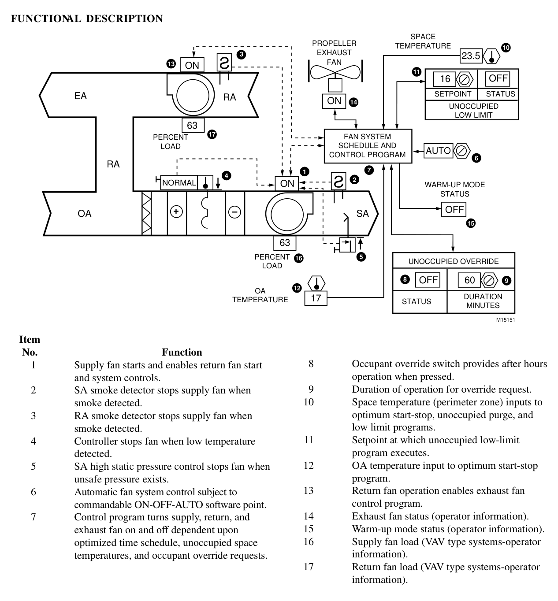
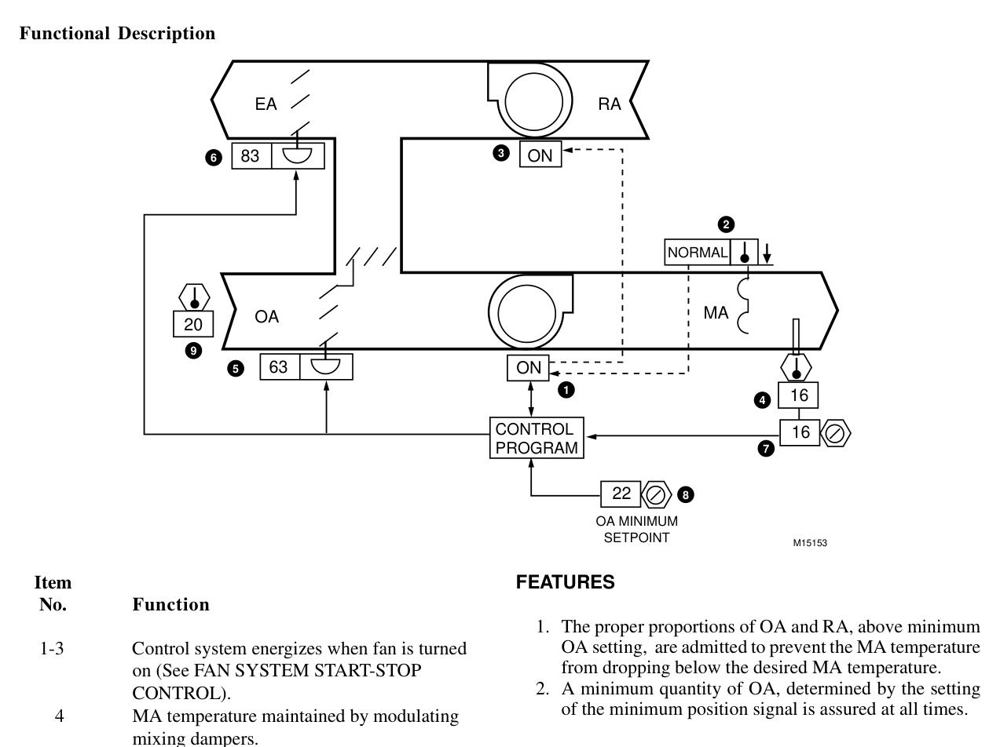
7.4 節能器循環 Economizer（免費冷卻）
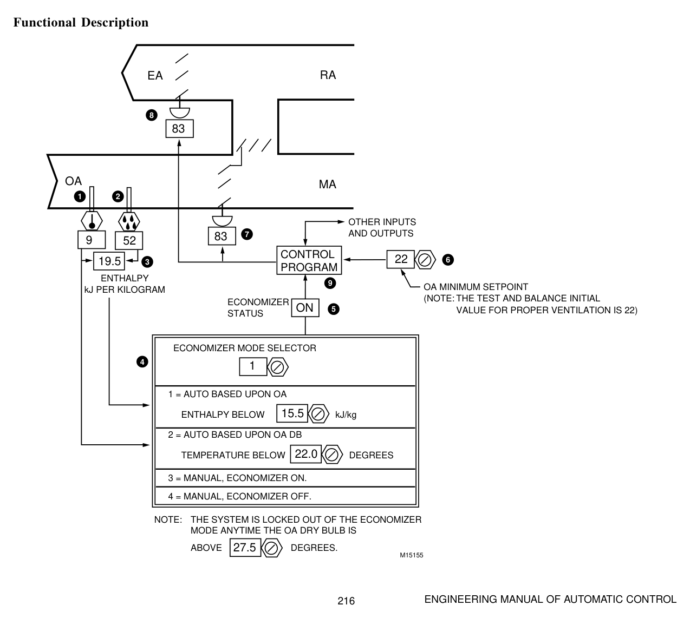
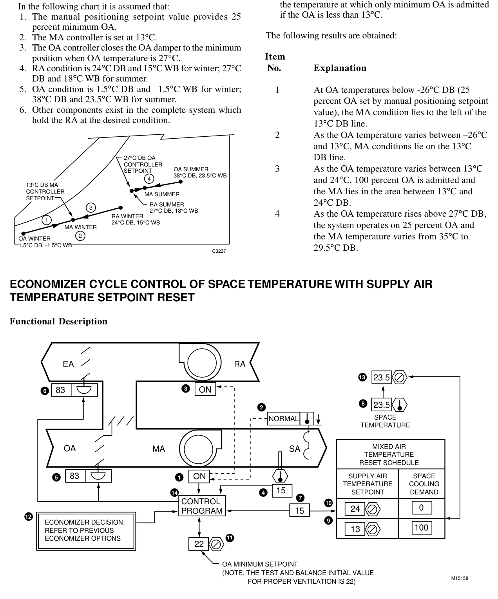
| 節能器類型 | 決策變數 | 優點 | 缺點 | 適用 |
|---|---|---|---|---|
| 乾球式 Dry-bulb | OA 溫度 vs. 設定（如 18°C） | 感測器便宜可靠 | 濕熱氣候誤判 | 乾燥氣候、算力中心 |
| 焓值式 Enthalpy | OA 焓值 vs. RA 焓值 | 理論最優 | 濕度感測漂移致命 | 需年度校驗制度 |
| 電子焓值/露點混合 | 乾球＋露點上限 | 兼顧可靠與準確 | 邏輯較複雜 | 濕熱氣候（台灣） |
7.5 全年運轉系統與 VAV 空調箱
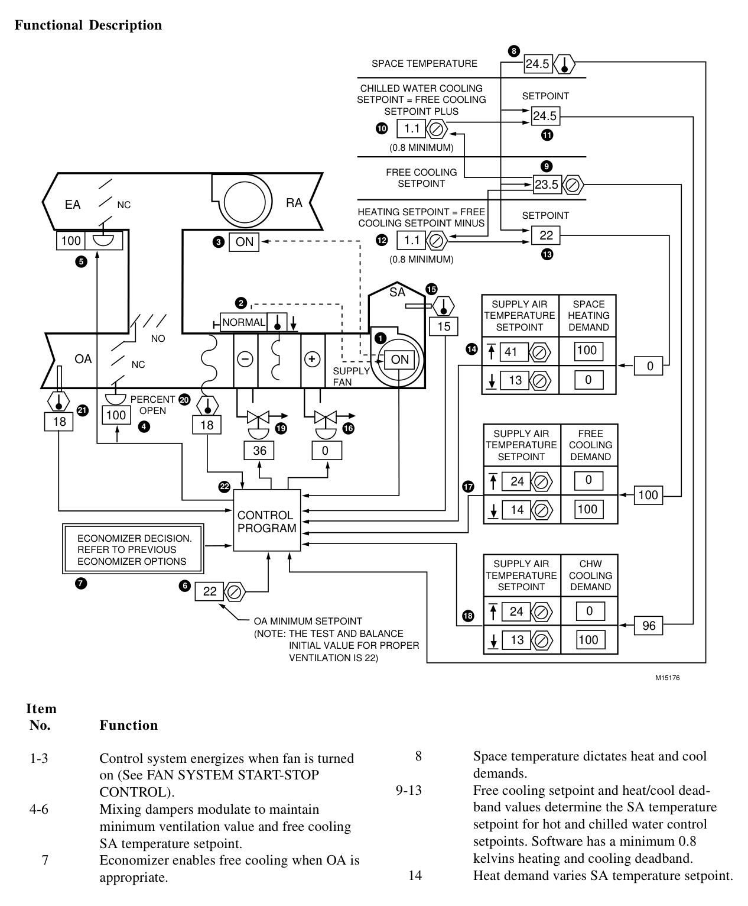
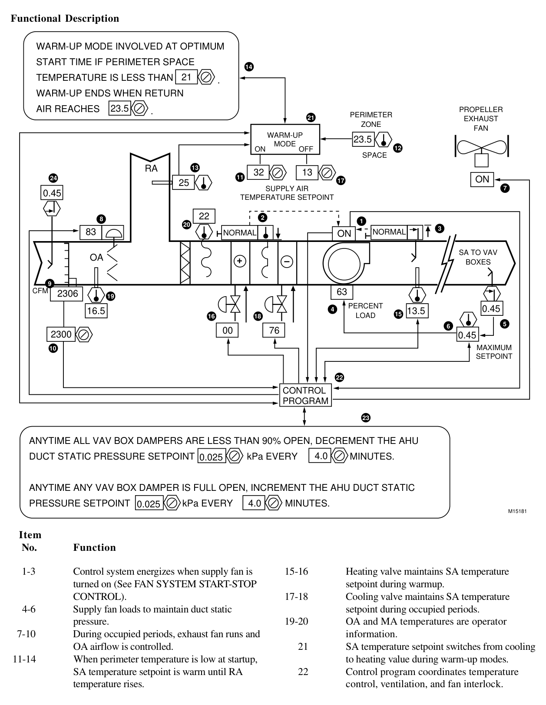
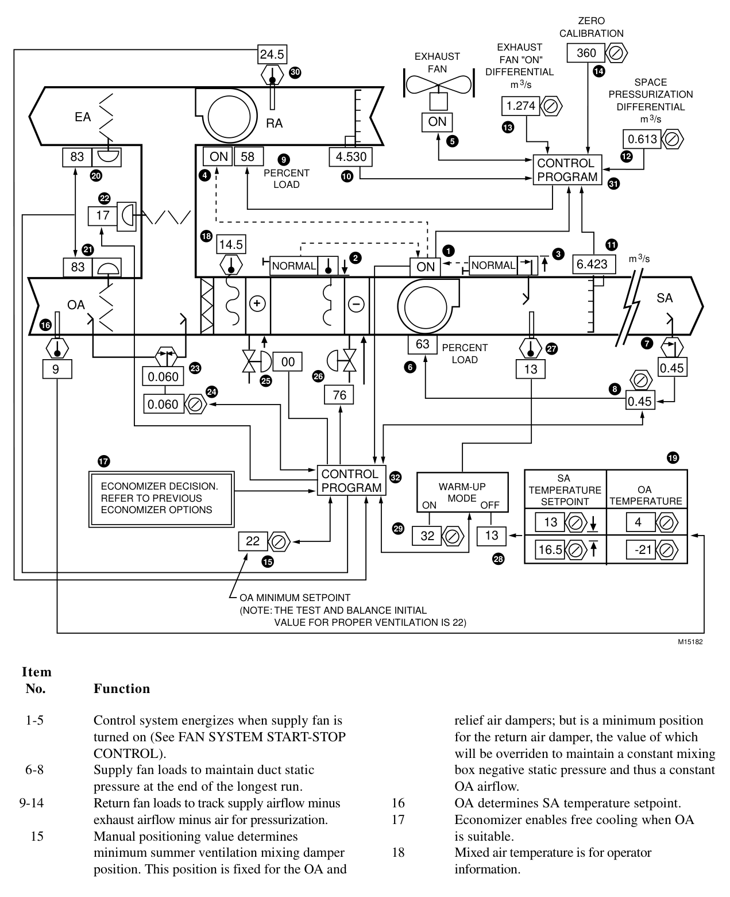
7.6 測試方法與驗證重點（AHU 全機）
- 風門連動與密封：命令 OA 風門 0/50/100%，現場目視開度與回授一致；全關時以煙霧棒檢查洩漏（節能器模式錯誤的第一嫌疑犯）。
- 模式切換測試：模擬外氣溫度/焓值跨越節能器切換點，驗證 OA→100% 且冰水閥關閉；反向復歸無振盪。
- 凍結保護：短接凍結保護開關（Freezestat），風機停、OA 風門關、熱水閥全開、警報發出——四動作缺一不可。
- 送風溫度迴路性能：依 M1 步驟做階梯與擾動測試；節能器模式下重做一次（程序增益不同，必要時啟用參數組切換）。
- 靜壓重置（Trim & Respond）：以軟體強制所有 VAV Box 開度 <90%，觀察靜壓設定值每 4 min 遞減；強制一箱全開，觀察遞增——趨勢圖截圖存證。
- 流量追蹤：平衡後量測送/回風量差值，與設計外氣量核對（±10%）。
- 72 hr 連續運轉趨勢：關鍵點（SAT、靜壓、風門開度、閥位、模式）1 min 間隔記錄，審查日夜循環是否穩定。
模組 8｜風量與風管靜壓控制 Airflow Control
對應原書 pp.263–290。VAV 系統是辦公大樓主流，也是風側節能主戰場；其核心物理是風扇相似律與風管壓力分布。
8.1 風系統基礎：系統曲線與風扇曲線
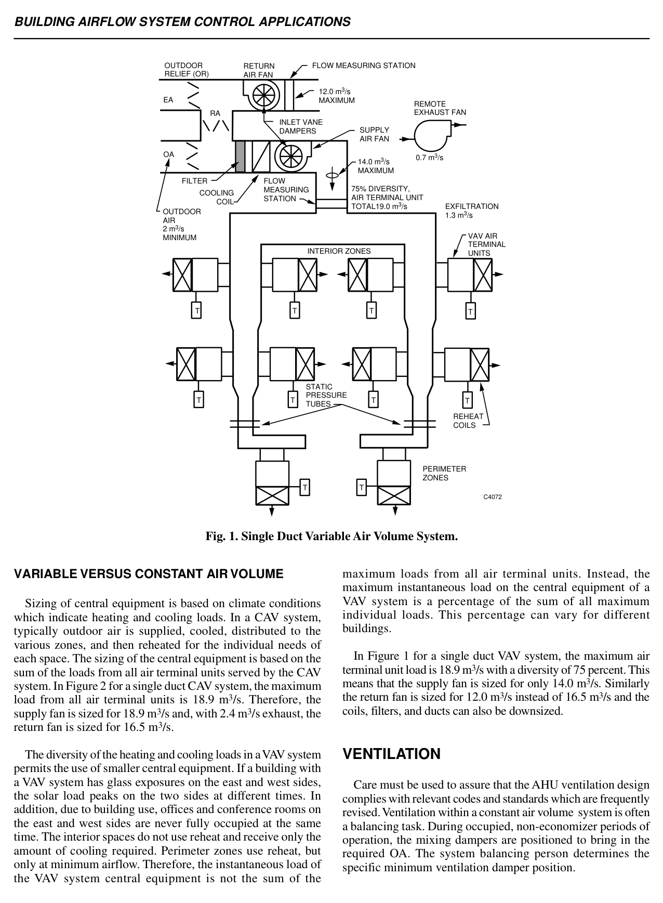
8.2 風量量測：皮托管與量測站
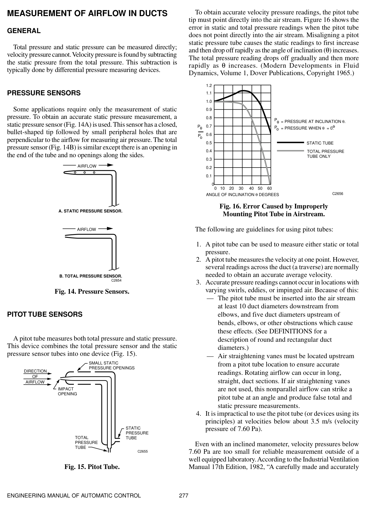
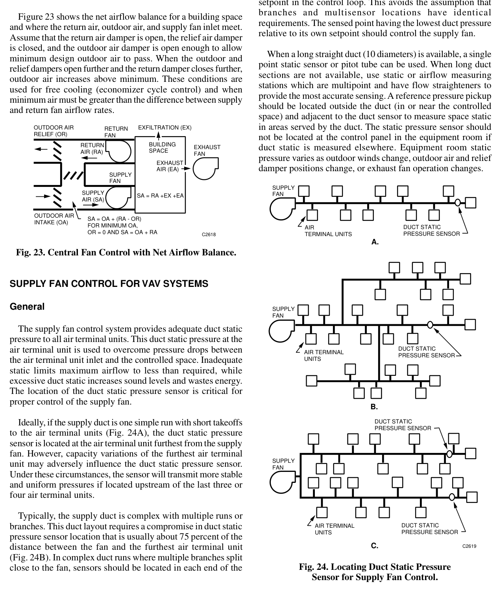
8.3 靜壓控制策略比較
| 策略 | 原理 | 節能 | 風險 |
|---|---|---|---|
| 固定靜壓設定 | 維持 2/3 處定壓（如 375 Pa） | 基準 | 部分負載時過壓、風門節流噪音 |
| 靜壓重置 Trim & Respond | 依 VAV Box 開度回授升降設定（M7 原書圖36） | 額外 20–40% 風機能耗 | 需 Box 開度資料齊全；回應參數需調 |
| 開迴路/直接建築靜壓 | 不回饋風管靜壓，直接依風量命令 | 最高 | 調試困難，原書列為特殊應用 |
8.4 測試與驗證重點
- 皮托管橫向 Traverse 量測：依原書皮托管定位法（等面積法/Tchebycheff 法則）實測風量，校準風量量測站 K 值，誤差 ≤5%。
- 靜壓感測器位置驗證：全負載（所有 Box 最大）時 2/3 處靜壓達設計值；最遠端 Box 人口靜壓 ≥ 其所需最小值（查 Box 型錄，常見 125–250 Pa）。
- 靜壓迴路擾動測試：強制 30% Box 同時改變風量，靜壓應在 60 s 內回穩、無持續振盪（±25 Pa）。
- VFD 最低轉速保護：風機不得低於喘振/馬達冷卻下限（通常 20–30 Hz），測試低速長時間運轉之馬達溫升。
- 夜間/部分負載噪音檢查：靜壓過高下風門節流嘯音，以噪音計於典型區域量測（辦公室 NC-35~40）。
模組 9｜冰水／鍋爐／水配送系統控制
對應原書 pp.291–404。水側是建築能耗最大區塊（冰水主機佔全廠 40–60%），也是算力中心散熱的命脈。本章涵蓋主機原理、台數控制、冷卻水塔、泵浦系統曲線、一次/二次側架構與區域供熱。
9.1 冰水主機原理與控制
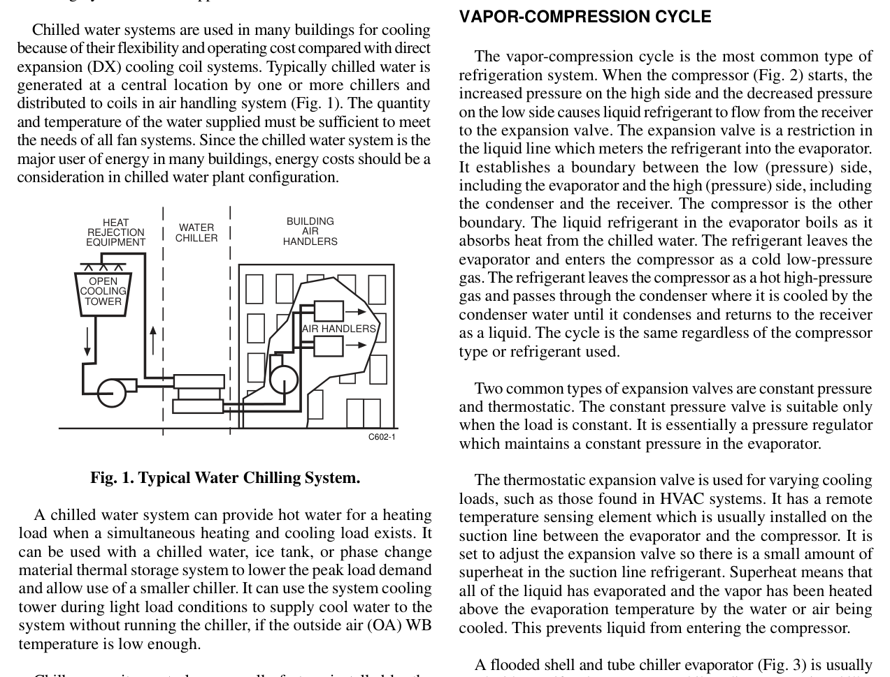
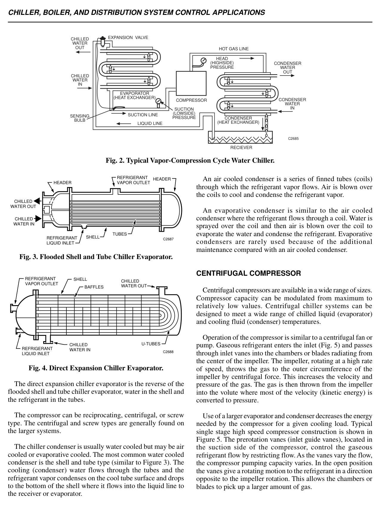
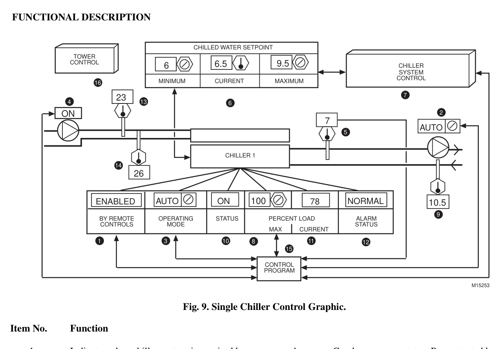
9.2 多機台數控制（Sequencing）
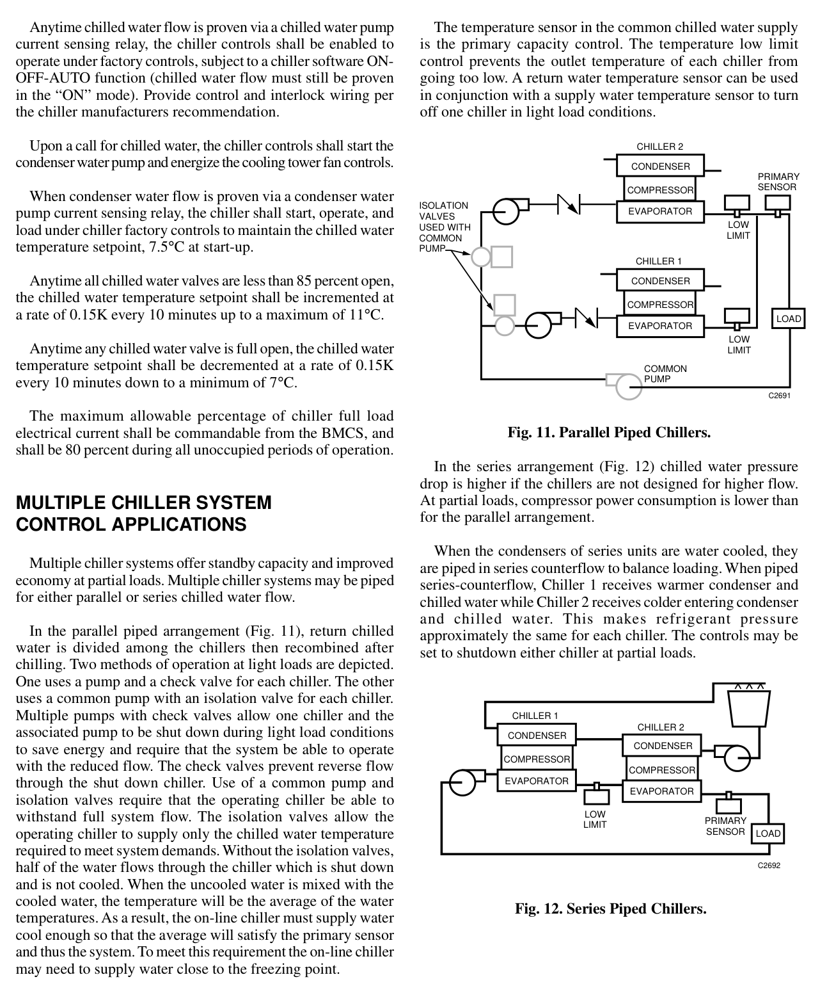
| 加/減機依據 | 方法 | 優點 | 風險 |
|---|---|---|---|
| 流量×溫差（kW 冷凍噸） | kW = 4.187 × Q(m³/h) × ΔT(°C) / 3.516 RT | 直接反映負載 | 需準確流量計 |
| 主機 %RLA（額定電流比） | 現機 >90% RLA 持續 15 min 加機 | 不需流量計 | 低壓差時誤判 |
| 旁通流量方向（一次/二次側） | 二次側需求 > 一次側供應 → 加機 | 適合 P-S 系統 | 需旁通流量計 |
9.3 冷卻水塔控制
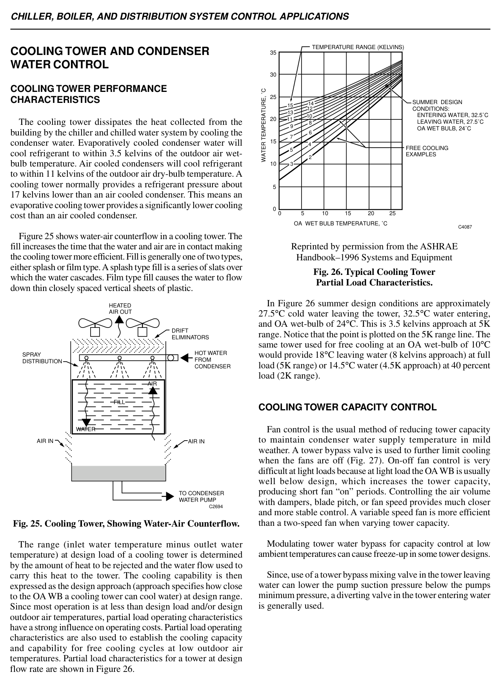
9.4 一次側/二次側泵浦系統（Primary-Secondary）
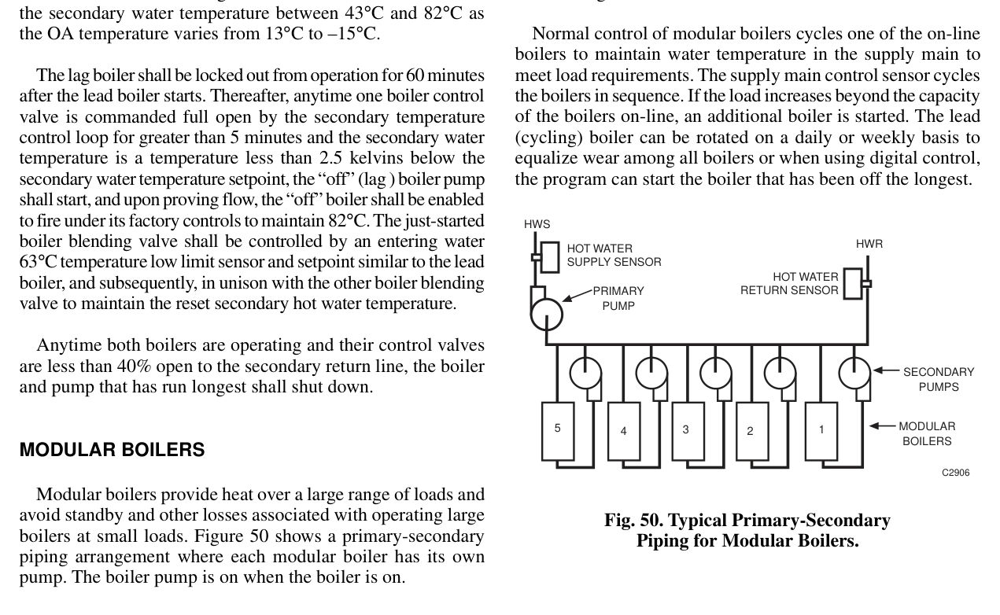
9.5 泵浦曲線與閥門協同（原書 pp.337–356 精華）
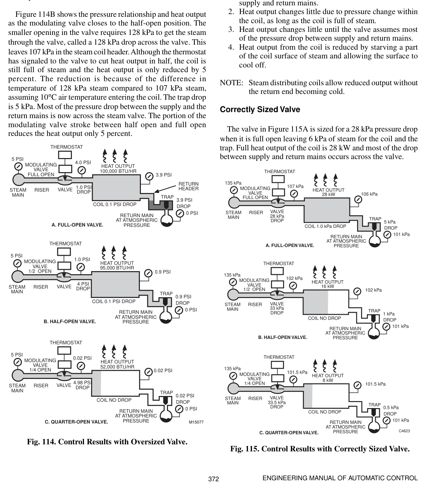
9.6 測試與驗證重點
- 主機通訊點全測：%RLA、蒸發/冷凝進出水溫、油壓、故障碼逐點比對主機面板。
- 台數控制演練：以負載模擬（或調整設定值）觸發加機/減機，驗證延遲時間、泵浦與隔離閥連動順序、失敗備援邏輯。
- 低冷凝水溫保護：逐步降低塔風機命令，驗證系統在接近下限時自動限制（bypass 閥或風機下限）。
- P-S 系統水平衡：部分負載下記錄共通管流向與溫度，確認無長期逆向流。
- 泵浦 VFD 與差壓控制：最不利迴路差壓感測器位置驗證（同風系統 2/3 概念），差壓重置功能測試。
- 群控整體效率：量測 kW/RT（主機＋泵＋塔），建立部分負載效率曲線作為能耗基線——算力中心以 pPUE 冷卻分量呈現。
模組 10｜末端與房間控制 Individual Room Control
對應原書 pp.395–424。末端是「使用者體感」的最後一哩：VAV Box、風機末端、風機盤管 FCU、熱泵、輻射板。
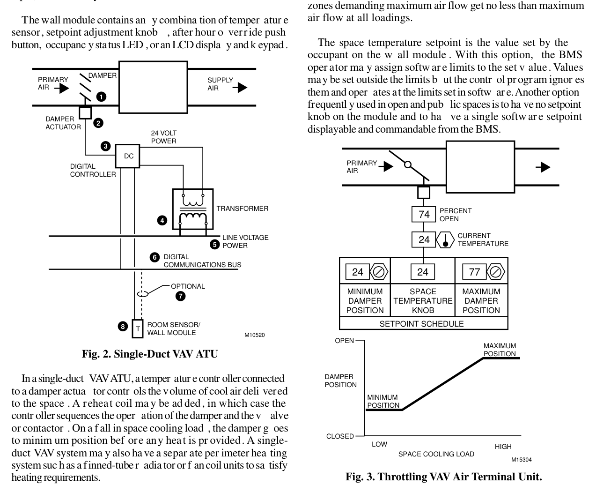
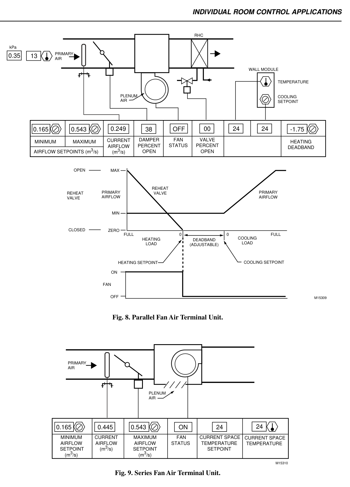
10.1 VAV Box 控制邏輯（單風管再熱型標準序列）
（如 24°C）"] -->|"室溫↑"| B["風量命令↑
最小→最大冷房風量"] C["室溫在死區內
23–24°C"] --> D["維持最小風量
（換氣需求）"] E["室溫 < 暖房設定
（如 22°C）"] -->|"室溫↓"| F["先最小風量
→再熱閥/電熱段投入"]
| 驗證項目 | 方法 | 允收標準 |
|---|---|---|
| 風量標定（K 值） | 風量罩實測 vs. Box 回授，三點（最小/中間/最大） | 誤差 ≤5–10% |
| 壓力無關性 | 上下游靜壓擾動（鄰箱全關）下風量維持 | 波動 <±10% |
| 最小風量 | 暖房模式下實測 | ≥換氣需求（ASHRAE 62.1） |
| 再熱連鎖 | 冷房需求存在時再熱必須關閉 | 冷熱互搏=0 |
| 噪音 | 最大風量下室內量測 | ≤NC-35/40（辦公） |
10.2 測試與驗證重點
- 抽測比例：同型 Box 至少 10%（且每樓層≥1 台）全項測試；異常即擴大至 25%。
- 群控連動：Box 開度資料回傳 AHU 靜壓重置邏輯（M7/M8）之完整性。
- FCU：二管式季節切換（夏/冬模式）與水側閥動作方向；四管式死區驗證。
- 無人時段測試：佔用/非佔用排程下 Box 關至最小/關閉，驗證節能與安全（電腦機房專用 Box 除外）。
模組 11｜閥門與風門選型計算 Valve & Damper Engineering
對應原書 pp.427–464。選型錯誤是控制失效的第一大硬體原因，且無法用軟體補救。本章是設計顧問與試運轉診斷的共同語言。
11.1 閥門構造與流量特性
11.2 閥門選型計算（Cv 法）
選型三步驟：① 由盤管負載求設計流量 Q；② 取閥門分擔壓差 ΔP（閥權度 Valve Authority N = ΔPvalve/(ΔPvalve+ΔPcircuit) 建議 ≥0.3–0.5）；③ 計算 Cv 並選大一號內最接近之閥體，核對關斷壓差（Close-off）與洩漏等級。
11.3 風門選型
11.4 測試與驗證重點
- 閥門：核對銘牌 Cv 與計算書；0/25/50/75/100% 行程 vs. 實際流量（有流量計時）繪製安裝特性；關斷測試（全關後盤管出風溫度回歸）。
- 三通閥：核對混合/分流型式與配管方向；常開/常通口（Port）斷電位置。
- 風門：全關洩漏目視/煙霧檢查；致動器扭力 vs. 風門需求扭力（製造商數據）；彈簧復位時間 < 20 s（煙控/防凍）。
- 閥權度複核：實測閥全開壓差 / 迴路總壓差，N<0.25 時控制品質必差——列入缺失而非調參。
模組 12｜試運轉測試程序與驗證方法（Cx Commissioning）
本章為教案新增（原書無專章），整合 ASHRAE Guideline 0/1、NEBB/ACG 程序與顧問實務，將前面各模組的「驗證重點」組織成可執行的標準流程。
12.1 試運轉總流程
設計意圖審查 DOD/ODR"] --> B["施工階段
自控設備進場檢驗"] B --> C["預功能檢查 PFC
Pre-Functional Check"] C --> D["點對點測試 P2P
Point-to-Point"] D --> E["迴路校驗與 PID 整定
Loop Tuning"] E --> F["功能性能測試 FPT
Functional Performance Test"] F --> G["整合/連鎖測試
煙控/火警/備援"] G --> H["趨勢記錄驗證
72hr~2週 Trend Review"] H --> I["季節性/延遲測試
Seasonal & Deferred Testing"] I --> J["竣工文件與訓練移交
O&M + Training"] J --> K["保固期跟催
Warranty Review（10個月）"]
12.2 各階段測試程序與方法
階段 1：預功能檢查 PFC（通電前）
- 設備銘牌 vs. 圖說（型號、量程、Cv、扭力、彈簧範圍）
- 安裝查驗：感測器位置/插入深度、取壓口方向、直管段、遮罩接地、管路吹洗試壓完成
- 配線查驗：迴路阻抗、絕緣（500 V megger）、極性、端子編號 vs. 迴路圖
階段 2：點對點測試 P2P
| 點型 | 方法 | 記錄內容 |
|---|---|---|
| DI | 現場短接/斷開，BMS 確認狀態與文字描述 | 正常態、反應時間、警報連動 |
| AI | 過程校驗儀注入 4/12/20 mA 或標準器比對 | 三點誤差、工程單位、量程 |
| AO | BMS 命令 0/50/100%，現場量測訊號與機械位置 | 線性度、動作方向 |
| DO | 強制 ON/OFF，確認負載動作與回授一致 | 接點容量、連鎖行為 |
| 通訊點 | 比對設備本體 HMI 數值；寫入測試（有權限者） | 數值一致性、R/W 屬性、刷新率 |
階段 3：功能性能測試 FPT
以 SOO 為腳本，逐句驗證。每個 FPT 表單應含：前置條件→測試步驟→模擬方法→預期結果→實測結果→允收基準→簽認。常用模擬手法：感測器訊號注入、軟體強制（Override，測後必復歸）、設定值擾動、環境等待（配合天候）。
階段 4：趨勢記錄驗證（Trend-Based Verification）
階段 5：整合與特殊測試
- 火警/煙控整合：依煙控矩陣逐情境（M6），消防優先權、復歸程序
- 斷電復歸：全廠/分區停電復電，設備重啟順序、時間交錯（防湧浪）、參數保存
- 備援切換：N+1 設備輪值與故障自動切換（算力中心必測，M14）
- 網路失效降級：BMS 伺服器離線，現場控制器自主運轉驗證
- 季節測試：冬季預熱/防凍、夏季全負載——簽約時即應排入「延遲測試」條款
12.3 測試文件與簽認鏈
| 文件 | 產出時機 | 簽認方 |
|---|---|---|
| Cx Plan 試運轉計畫 | 設計完成 | 業主/顧問/承包商 |
| PFC 檢查表 | 安裝完成 | 施工/監造 |
| P2P 測試紀錄（100% 點位） | 通電後 | 施工/Cx 顧問 |
| FPT 紀錄（逐 SOO） | P2P 合格後 | Cx 顧問/業主見證 |
| Issues Log 缺失追蹤表 | 全程滾動 | 三方週會檢討 |
| 趨勢驗證報告 | FPT 後 | Cx 顧問 |
| Final Cx Report 總報告 | 完工 | 業主核定 |
模組 13｜交付文件完整解析 Deliverables
自控工程的交付文件是一條鏈：每一階段的文件是下一階段的輸入。缺環 = 試運轉無依據、維護無人手冊、驗收無基準。以下依生命週期解析各文件之內容要項、常見缺失與審查重點。
13.1 文件鏈總覽
Basis of Design"] --> B["控制圖說
Control Drawings"] B --> C["IO 點表
Points List"] B --> D["操作程序書
SOO"] C --> E["圖控畫面
Graphics"] D --> E D --> F["控制程式
Programs"] E --> G["測試紀錄
P2P/FPT"] F --> G G --> H["竣工圖說
As-Built"] G --> I["O&M 手冊"] H --> I I --> J["教育訓練教材
與移交簽認"]
13.2 逐項文件解析
① 設計意圖書（Basis of Design / OPR 對應）
- 內容：業主需求（OPR）轉譯為設計基準——室內條件（溫濕度/正壓/潔淨度）、運轉時程、備援等級（N/N+1/2N）、能效目標（PUE、EUI）、監控範圍、通訊協定。
- 審查重點：每條需求必須「可測試」——「舒適」要寫成 24±1°C/50±10%RH；「高可靠」要寫成 N+1 與 MTTR 目標。
② 控制圖說（Control Drawings）
- 內容：系統控制示意圖（Schematic，如原書各控制程序圖）、迴路接線圖、盤體配置圖、網路架構圖、電源圖、風管/水管儀控圖（P&ID 標註感測點）。
- 常見缺失：示意圖與接線圖點位代碼不一致；失效復位方向（FO/FC）未標示；安全連鎖未以硬接線圖示。
③ IO 點表（Points List）
- 詳 M5——七欄鐵則。原書 Fig.8 I/O Summary Form 是經典格式（點型×軟體功能矩陣）。
- 審查重點：點數統計驅動控制器選型（每控制器預留 15–20% 備用點）；警報與趨勢欄位完整。
④ 操作程序書 SOO（Sequence of Operation）——自控工程的靈魂文件
沿用原書六段式（M7）：
- Functional Description：以項次編號對照控制圖逐項說明動作。
- Features：功能特性清單（即成為 FPT 檢核表）。
- Conditions for Successful Operation：成功運轉前提（水力平衡完成、感測器位置、參數整定）。
- Specifications：規格化敘述（控制模式、精度、回應時間）。
- Psychrometric/工程分析：模式切換的熱力學依據。
- 參數表：所有設定值、Reset Schedule、警報限值、延遲時間之總表。
審查重點：每一句 SOO 都應可被一個測試步驟驗證；模糊詞（「適當地」「必要時」）全部退回。
⑤ 圖控畫面（Graphics）
- 原書 pp.191–196：頂層全區圖→設備圖逐層滲透；動態資料嵌入（如原書 Fig.9 Single Chiller Control Graphic）。
- 審查重點：每個動態元件對應點表一點；警報色階一致（紅=緊急）；操作員可由此執行的動作必須有權限與記錄（Audit Trail）。
⑥ 測試紀錄與竣工文件（As-Built + O&M）
- As-Built：反映所有變更的圖說+點表+參數表（以 P2P/FPT 簽認版反推更新，M5 痛點對策）。
- O&M 手冊：設備型錄、校驗週期表、備品清單、故障排除決策樹、訓練教材與簽到紀錄。
- 保固條款：10 個月保固檢討（涵蓋四季）與季節測試安排。
13.3 交付文件查核表（顧問用）
| # | 查核項 | 不合格典型後果 |
|---|---|---|
| 1 | SOO 含全部設定值參數表且與控制器實際值一致 | 驗收無基準、人員異動即失能 |
| 2 | 點表 100% 經 P2P 簽認且版次最新 | 維修查無點位 |
| 3 | 安全連鎖硬接線圖與現場一致 | 消防查驗不通過 |
| 4 | 圖控點位與點表雙向可追溯 | 誤操作風險 |
| 5 | 趨勢記錄預設啟用（關鍵點≥1 yr 保存） | 故障無法舉證分析 |
| 6 | 控制程式原始檔+註解交付並版本管理 | 被單一廠商綁定 |
| 7 | 校驗證書（感測器/儀器）在有效期內 | 量測不被承認 |
| 8 | 教育訓練含實機操作與錄影，簽到存證 | 移交後操作事故 |
模組 14｜個案研究 A：AI 算力中心（AI Data Center）
以某 Tier III、IT 負載 4 MW、水冷式 DX 備援之 AI 算力中心為例，融合前述原理、IO 硬體與交付文件。GPU 機櫃單櫃 40–120 kW 時代，散熱控制已由「舒適」思維轉為「製程」思維。
14.1 需求與設計基準（BoD 摘錄）
| 項目 | 設計基準 | 對應模組 |
|---|---|---|
| 冷通道溫度 | 24°C ±1（ASHRAE TC9.9 建議 18–27°C） | M1 PID |
| 濕度/露點 | 露點 5.5–15°C，RH ≤60% | M2 焓濕圖 |
| 備援 | 冷卻 N+1，電力 2N，控制器雙網路 | M4 Standalone |
| PUE 目標 | 年均 ≤1.35（水冷+板換免費冷卻） | M9/M17 |
| 液冷介面 | CDU 二次側供水 32°C±1，TCS 迴路獨立監控 | M9 水側原理延伸 |
| SLA 舉證 | 溫度/濕度趨勢 1 min 間隔，保存 ≥3 年 | M5/M12 |
14.2 冷卻系統控制架構
台數控制（kW 依據）"] --> P1["一次側泵 定流量"] P1 --> DEC["共通管 Decoupler"] DEC --> P2["二次側泵 VFD
差壓重置"] HX["板換免費冷卻
（冷凝水 < 設定即切入）"] -.並聯.- CH end P2 --> CRAH["CRAH 群組 N+1
回風 35°C → 送風 22°C"] P2 --> CDU["液冷 CDU
一次側 32°C 水"] CRAH --> CA["冷通道 24°C ±1"] CA --> RACK["GPU 機櫃
40–120 kW/櫃"] RACK --> HA["熱通道 35–40°C"] HA --> CRAH BMS["BMS/DCIM
群控＋趨勢＋PUE 計算"] -.監控.- CH BMS -.監控.- CRAH
14.3 關鍵控制迴路解析（原理 × 本個案）
| 迴路 | 原理出處 | 本個案設計 | 驗證重點 |
|---|---|---|---|
| CRAH 送風溫度 | M1 PI 控制 | PB 4°C / Ti 8 min，依 IT 負載切換兩組參數 | 階梯負載（假負載 30→90%）下 SAT 波動 <±0.5°C |
| CRAH 風機群控 | M8 風扇相似律 | 依機櫃壓差（冷/熱通道 ΔP≈20–50 Pa）群控轉速，N+1 風機待命自動併入 | 單機故障 30 s 內 ΔP 恢復 90% |
| 冰水出水溫度重置 | M4 Load Reset | 依最不利 CRAH 閥位重置 CHWS 6.5→10°C | 重置期間無 CRAH 閥位 >95% 超過 15 min |
| 板換免費冷卻切換 | M7 節能器（水側） | 冷凝水 < 14°C 且持續 30 min → 板換模式；冰機待命降載 | 切換過程 CHWS 波動 <1°C |
| 加濕/除濕 | M2 焓濕 | 露點控制：<5.5°C 啟電極加濕；>15°C 提高冷卻除濕 | 標準氣體/乾濕球比對，模式無互搏 |
| 液冷 CDU | M9 水側 | 二次側泵定壓差、供溫 32°C±1；洩漏偵測 DI 全區佈點 | 洩漏模擬 5 s 內警報＋隔離閥動作 |
| 正壓與氣密 | M6 流量追蹤 | 機房對外 +5 Pa；氣密檢測（Blower Door）納入 Cx | 門開啟 60 s 內正壓恢復 |
14.4 IO 點表範例（CRAH-01 摘錄，對照原書 Fig.8 格式）
| 點位代碼 | 說明 | 點型/訊號 | 量程 | 警報 | 趨勢 |
|---|---|---|---|---|---|
| CRAH01-SAT | 送風溫度 | AI 4–20 mA | 0–50°C | >25°C 重要 | 1 min |
| CRAH01-RAT | 回風溫度 | AI Pt1000 | 0–50°C | >42°C 緊急 | 1 min |
| CRAH01-RH | 回風濕度 | AI 4–20 mA | 0–100% | 露點越限 | 1 min |
| CRAH01-CWV | 冰水閥命令 | AO 0–10 V | 0–100% | — | 1 min |
| CRAH01-FAN-SPD | 風機轉速命令 | AO 4–20 mA（至 VFD） | 0–100% | — | 1 min |
| CRAH01-FAN-ST | 風機運轉狀態 | DI（CT 電流感知） | — | 命令≠狀態 30 s | COV |
| CRAH01-FLT-DP | 濾網壓差 | AI 0–10 V | 0–500 Pa | >350 Pa 提示 | 15 min |
| CRAH01-LEAK | 底部洩漏偵測 | DI NC | — | 緊急＋閥隔離 | COV |
| CHW-SUP-T / CHW-RET-T | 冰水供回水溫 | AI Pt1000（成對） | 0–30°C | ΔT<4°C 提示（Low ΔT） | 1 min |
| IT-LD | IT 總負載 | 通訊點（Modbus 自 UPS/PQMS） | 0–6 MW | — | 1 min（PUE 計算） |
14.5 本個案測試程序重點（Cx Level 1–5）
- L1–L2：設備進場與安裝查驗（同 M12 PFC）。
- L3：P2P＋單機 FPT——CRAH 單機迴路、閥門行程、洩漏連動。
- L4：系統整合測試——假負載（Load Bank）25/50/75/100% 四階段，每階段 ≥2 hr，驗證群控、台數、免費冷卻切換、N+1 拉機測試（Pull-the-Plug）。
- L5：綜合情境演練（IST）——市電中斷+發電機+UPS 轉換期間，冷卻不中斷（飛輪/蓄水罐緩衝），溫度全程 ≤27°C。
14.6 交付文件加碼清單（算力中心專用）
- 失敗模式分析（FMEA）：每個控制失效情境→偵測手段→緩解動作→測試編號
- IST 腳本書與錄影存證
- PUE 計算邊界定義書（量測點位置、含哪些輔機）
- SLA 佐證報表自動產出設定（月報）
- 網路資安文件：VLAN 劃分、帳號權限、韌體版本清冊（IEC 62443 精神）
模組 15｜個案研究 B：智慧辦公大樓
以某 28 層、36,000 m²、VAV 單風管再熱系統、兩台 500 RT 離心機+一台 200 RT 螺旋機之辦公大樓為例。重點從算力中心的「製程可靠」轉為「舒適×節能×計費」。
15.1 系統與控制策略對照
| 子系統 | 策略（原理出處） | 本個案參數 |
|---|---|---|
| AHU（每 4 層一台） | 送風 13.5°C 恆溫 + CO₂ DCV（M6）+ 靜壓 T&R（M7/M8） | 靜壓基準 375 Pa，T&R 步階 25 Pa/5 min |
| VAV Box（620 台） | 壓力無關型 + 外區並聯風機再熱（M10） | 最小風量 30%，外區再熱死區 1°C |
| 冰機群 | 大小機搭配台數控制（M9） | 夜間/假日 200 RT 單機供應 |
| 熱水（外區再熱） | 外氣重置（M1 Reset） | OA 15°C→60°C；OA 0°C→82°C |
| 最佳啟停 | M4 Optimum Start | 佔用 08:00，學習斜率啟動 06:10–07:40 浮動 |
| 需量控制 | M4 Demand Limiting | 契約 1,800 kW，卸載順序：電熱再熱→冰機→照明迴路 |
| 租戶計費 | M5 能源累計 | 每戶 BTU 錶＋加班空調計費 |
15.2 與算力中心個案之差異對照（融會貫通表）
| 面向 | AI 算力中心 | 辦公大樓 |
|---|---|---|
| 控制目標 | 製程參數（24×7 恆定） | 舒適+節能（隨作息波動） |
| 負載特性 | 高顯熱、穩定且巨大 | 潛熱比例高、日夜落差大 |
| 控制精度 | ±0.5–1°C、露點管理 | ±1–2°C、RH 40–60% |
| 備援思維 | N+1/2N、IST 驗證 | 單機+維修時程管理 |
| 節能主力 | 免費冷卻、高水溫、風機群控 | VAV+T&R、最佳啟停、需量、DCV |
| 驗收核心 | Load Bank 全負載＋拉機測試 | 舒適度巡檢＋能耗基線（IPMVP） |
| 交付加碼 | FMEA/IST/PUE 邊界 | 計費報表/租戶操作手冊 |
15.3 本個案試運轉實錄（教學案例）
模組 16｜其他產業應用補充
| 產業 | 控制重點 | 借用模組 | 特殊要求 |
|---|---|---|---|
| 醫院 | 開刀房正壓+層流、隔離病房負壓、溫濕度嚴管 | M6 壓差、M7 AHU | ASHRAE 170；壓差警報即時性；備援切換不中斷 |
| 半導體廠 | 潔淨室（MAU+FFU+乾盤管）、外氣大量恆溫恆濕 | M2 焓濕、M8 風量 | ISO Class 1–7；AMC 化學過濾；±0.1°C 級製程冷卻水 |
| 藥廠（GMP） | 潔淨分級、壓差梯度、溫濕度記錄 | M6、M12、M13 | 21 CFR Part 11 電子記錄；CSV 電腦化系統確效（IQ/OQ/PQ） |
| 商場/購物中心 | 大空間 AHU+CO₂ DCV、中庭排煙 | M6 煙控、M7 | 人潮負載劇變；中庭煙控性能設計驗證 |
| 飯店 | 四管式 FCU、客房節能（插卡/佔用感測） | M10 FCU | 與 PMS 整合；浴室排風連鎖 |
| 區域供冷/供熱 | 大溫差串聯冰機、熱交換站 DDC（原書 pp.380–394） | M9 串聯/HTW | 原書 District Heating 章節：壓力剖面、混水站、二段式熱交換器 DDC 控制 |
模組 17｜痛點、流程、成本與效益總分析
17.1 全生命週期痛點地圖
| 階段 | 典型痛點 | 根因 | 對策（模組） |
|---|---|---|---|
| 設計 | 閥門/風門 Oversized、感測器位置錯 | 以管徑選閥、圖說未標位置 | Cv 計算書審查（M11） |
| 發包 | 規格只寫品牌不寫性能 | SOO 與點表未列為投標文件 | 六段式 SOO（M13） |
| 施工 | 配線極性/接地錯、三通閥裝反 | 無 PFC 即送電 | PFC 查驗（M12） |
| 試運轉 | P2P/FPT 被抽測、趨勢未啟用 | 工期壓縮、無守門機制 | 合約守門條款（M12） |
| 移交 | 點表/圖說未竣工更新、程式無原始檔 | 變更未走紅線流程 | As-Built 反推（M13） |
| 營運 | 參數被亂改、節能功能被停用 | 無趨勢基線、無權限管理 | 趨勢基線+Audit Trail（M18） |
17.2 成本結構與效益量化
自控系統成本佔比（典型辦公大樓，佔空調總工程費）
| 項目 | 佔比 | 說明 |
|---|---|---|
| 控制器/網路/伺服器 | 20–25% | DDC 控制器、網路控制器、工作站 |
| 感測器/傳送器 | 10–15% | 精度等級決定價差（±0.1°C vs ±1°C 價差 5–10 倍） |
| 閥門/風門/致動器 | 30–40% | 最大宗——也是省錢最不該省之處（M11） |
| 配管配線/盤體 | 15–20% | 含 MCC 界面 |
| 軟體/圖控/程式 | 8–12% | 授權點數計費常見 |
| 試運轉/文件/訓練 | 5–8% | 被砍價首選，卻是效益槓桿最高者 |
投資效益試算（36,000 m² 辦公大樓實例）
| 節能措施 | 投資（萬元） | 年節省（萬元） | 回收（年） | 依據模組 |
|---|---|---|---|---|
| VAV + 靜壓 T&R | 280 | 95 | 2.9 | M7/M8（風機³定律） |
| 最佳啟停+夜間循環 | 15（純軟體） | 38 | 0.4 | M4 |
| 冰水溫度/冷凝水重置 | 10（純軟體） | 45 | 0.2 | M9 |
| CO₂ DCV | 60 | 22 | 2.7 | M6 |
| Retro-Cx（含低 ΔT 診斷） | 40 | 55 | 0.7 | M12/M15 案例3 |
算力中心視角
- PUE 1.6→1.35（4 MW IT）：年省電費約 4,000+ 萬元（以 3.5 元/度計）——冷卻群控+免費冷卻+高水溫策略為主要貢獻。
- 一次非計畫停機之 SLA 賠償與商譽損失，往往超過全套自控系統造價——可靠度投資（N+1 控制、Standalone、IST 驗證）是保險而非成本。
模組 18｜進階工程實務應用
18.1 PID 整定實務（Ziegler-Nichols 閉迴路法 HVAC 改良）
- 切純比例控制（Ti=∞, Td=0），PB 由大漸小至持續等幅振盪，記錄臨界 PBu 與振盪週期 Tu。
- PI：PB = 2.2×PBu，Ti = 0.83×Tu；PID：PB = 1.7×PBu，Ti = 0.5×Tu，Td = 0.125×Tu。
- HVAC 折衷：上值再將 PB 放大 1.5 倍起步（寧慢勿振盪），溫度迴路多用 PI 即可，Td 僅用於快速迴路（靜壓、精密空調）。
- 驗收：擾動測試（M1）曲線比照原書 Fig.38–40 形狀。
18.2 Retro-Commissioning（既有建物再調試）診斷手法
| 症狀（趨勢特徵） | 可能根因 | 確認手法 |
|---|---|---|
| 溫度日夜等幅擺盪 | PB 過小/Ti 過短 | 階梯測試＋參數歷史 |
| 冷熱閥同時開啟 | 無零能區/死區太小 | 趨勢疊圖（冷閥/熱閥/室溫） |
| 靜壓長期頂在設定值上限 | T&R 被停用或 Box 開度未回傳 | 查程式版本與點位 |
| 冰水 ΔT<4°C | 盤管閥漏流/旁通/選型過大 | 紅外線熱像＋關斷測試 |
| 風機夜間全速 | 排程或佔用偵測失效 | 夜間趨勢審查 |
18.3 現代整合與資安
- 通訊：BACnet/IP + MS/TP 為主流；Modbus 接機電設備；MQTT/REST API 上雲（能源管理、AI 最佳化）。
- 資安（IEC 62443）：OT 網段隔離（VLAN/防火牆）、最小權限、韌體管理、遠端維護跳板機與 MFA、Audit Trail 啟用並留存。
- FDD 故障偵測診斷：以規則引擎（如「閥 100% 而溫度不變→閥或盤管異常」）將 M15 案例經驗自動化——是 BMS 的下一層價值。
- AI 最佳化：以歷史趨勢訓練負載預測，前饋調整冰機群與蓄冰/蓄水策略；前提永遠是「點表正確＋趨勢乾淨」——垃圾進、垃圾出。
18.4 試運轉顧問的價值主張（結語）
設計圖說保證「應該可行」、施工保證「裝起來了」，唯有試運轉證明「真的可行」。原書 1934 年首版至今，硬體從雙金屬演進到雲端 AI，但不變的是本教案反覆強調的閉環紀律：規格可測 → 測試留證 → 趨勢驗證 → 文件閉環。
模組 19｜總複習與結業測驗
19.1 知識點串聯複習（由葉回根）
AHU/冰機/VAV"] L4["SOO 六段式完備"] --> SYS SYS --> PLANT["全廠效能
PUE/EUI 達標"] L5["P2P+FPT+趨勢驗證"] --> PLANT PLANT --> BIZ["業主價值
舒適/可靠/節能/SLA"]
19.2 結業測驗（20 題，解答於各模組複習框）
展開測驗題目
- 閉迴路控制五要素為何？各舉一算力中心實例。
- 比例控制為何必有 Offset？加入積分後如何消除？
- 寫出外氣重置熱水溫度的線性內插公式，並計算 OA=5°C 時設定值（端點：15°C→55°C；−15°C→90°C）。
- 焓濕圖上「冷卻除濕」路徑為何先水平後沿飽和線折彎？
- 乾球節能器與焓值節能器在台灣氣候的取捨？
- 噴嘴-擋板放大原理；氣動彈簧範圍分段如何實現順序控制？
- Series 60 與 Series 90 的迴路本質差異？
- RTD 三線式補償原理；4–20 mA 相比 0–10 V 的優勢？
- DDC 的 Standalone 能力為何是算力中心剛需？
- 點表七欄鐵則默寫。
- 煙控加壓壓差上下限與其依據；門開啟力限制？
- 畫出 AHU 由啟動到送風的完整控制順序流程圖。
- Trim & Respond 邏輯默寫（兩方向規則+時間+步階）。
- 風扇相似律三式；風量降 20% 功率降多少？
- 一次/二次側系統共通管逆向流動的意義與後果？
- 等百分比閥特性為何適配水盤管？閥權度公式與建議值？
- 試運轉六階段與各階段守門文件？
- FPT 表單七要素？
- 算力中心 L4 測試為何不可省略？IST 驗證什麼？
- 低 ΔT 症候群的三個根因與診斷手法？
19.3 延伸閱讀與標準
- Honeywell《Engineering Manual of Automatic Control》SI Edition（本教案藍本）
- ASHRAE Guideline 0/1（Commissioning）、Guideline 36（高性能控制序列）、Standard 90.1/62.1/170、TC9.9（資料中心熱環境）
- NFPA 92（煙控）、UL 864/555S、AMCA 500-D（風門）、ANSI/FCI 70-2（閥洩漏）
- IEC 62443（OT 資安）、IPMVP（節能量測驗證）、21 CFR Part 11（藥廠）